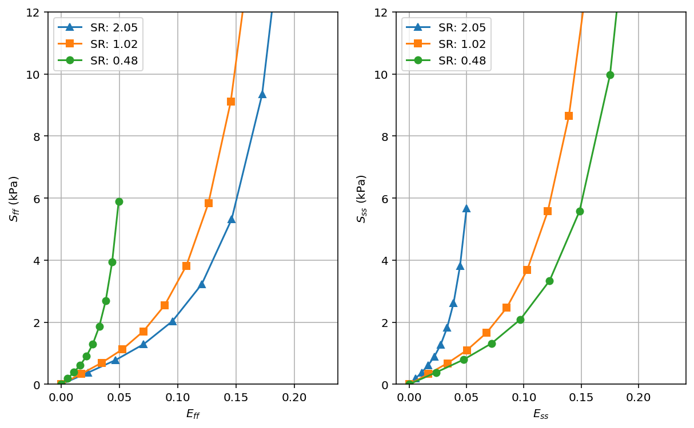

Biaxial stress test¶
Attempt to reproduce Figure 8 in [1].
[1] Holzapfel, Gerhard A., and Ray W. Ogden. “Constitutive modelling of passive myocardium: a structurally based framework for material characterization. “Philosophical Transactions of the Royal Society of London A: Mathematical, Physical and Engineering Sciences 367.1902 (2009): 3445-3475.
[22]:
from ufl.constantvalue import zero
from pulse.utils import mpi_comm_world
import dolfin
import matplotlib.pyplot as plt
import numpy as np
try:
from dolfin_adjoint import (
Constant,
DirichletBC,
Expression,
UnitCubeMesh,
interpolate,
)
except ImportError:
from dolfin import (
Constant,
DirichletBC,
interpolate,
Expression,
UnitCubeMesh,
)
[23]:
import pulse
[24]:
# Create mesh
N = 2
mesh = UnitCubeMesh(N, N, N)
[25]:
# Create a facet fuction in order to mark the subdomains
ffun = dolfin.MeshFunction("size_t", mesh, 2)
ffun.set_all(0)
[26]:
# Mark subdomains
xlow = dolfin.CompiledSubDomain("near(x[0], 0) && on_boundary")
xlow_marker = 1
xlow.mark(ffun, xlow_marker)
[27]:
xhigh = dolfin.CompiledSubDomain("near(x[0], 1.0) && on_boundary")
xhigh_marker = 2
xhigh.mark(ffun, xhigh_marker)
[28]:
ylow = dolfin.CompiledSubDomain("near(x[1], 0) && on_boundary")
ylow_marker = 3
ylow.mark(ffun, ylow_marker)
[29]:
yhigh = dolfin.CompiledSubDomain("near(x[1], 1) && on_boundary")
yhigh_marker = 4
yhigh.mark(ffun, yhigh_marker)
[30]:
center = dolfin.CompiledSubDomain(
"near(x[0], 0.5) && near(x[1], 0.5) && near(x[2], 0.5)"
)
center_marker = 5
center.mark(ffun, center_marker)
dolfin.File("ffun.pvd") << ffun
[31]:
# Collect the functions containing the markers
marker_functions = pulse.MarkerFunctions(ffun=ffun)
[32]:
# Create mictrotructure
V_f = pulse.QuadratureSpace(mesh, 4)
[33]:
# Fibers
f0 = interpolate(Expression(("1.0", "0.0", "0.0"), degree=1), V_f)
# Sheets
s0 = interpolate(Expression(("0.0", "1.0", "0.0"), degree=1), V_f)
# Fiber-sheet normal
n0 = interpolate(Expression(("0.0", "0.0", "1.0"), degree=1), V_f)
[34]:
# Collect the mictrotructure
microstructure = pulse.Microstructure(f0=f0, s0=s0, n0=n0)
[35]:
# Create the geometry
geometry = pulse.Geometry(
mesh=mesh,
marker_functions=marker_functions,
microstructure=microstructure,
)
# Use the default material parameters
material_parameters = {
"a": 2.28,
"b": 9.726,
"a_f": 1.685,
"b_f": 15.779,
"a_s": 0,
"a_fs": 0,
}
[36]:
# Create material
material = pulse.HolzapfelOgden(parameters=material_parameters)
[37]:
# Eff / Ess strain ratio
strain_ratio = Constant(1.0)
[38]:
# Create costants defined for the dirichlet BC
u0 = Constant(0.0)
x_strain = u0 * strain_ratio / 2
y_strain = u0 * (1 / strain_ratio) / 2
[39]:
# Make Dirichlet boundary conditions
def dirichlet_bc(W):
V = W if W.sub(0).num_sub_spaces() == 0 else W.sub(0)
return [
DirichletBC(V.sub(0), Constant(-x_strain), xlow),
DirichletBC(V.sub(0), Constant(x_strain), xhigh),
DirichletBC(V.sub(1), Constant(-y_strain), ylow),
DirichletBC(V.sub(1), Constant(y_strain), yhigh),
DirichletBC(V, np.zeros(3), center, method="pointwise"),
]
[40]:
# Collect Boundary Conditions
bcs = pulse.BoundaryConditions(dirichlet=(dirichlet_bc,))
[41]:
# Create problem
problem = pulse.MechanicsProblem(geometry, material, bcs)
[46]:
%matplotlib inline
# Solve problem
max_xi = [0.1, 0.15, 0.1]
data = {}
for i, sr in enumerate([2.05, 1.02, 0.48]):
strain_ratio.assign(sr)
Effs = []
Sffs = []
Esss = []
Ssss = []
for xi in np.linspace(0, max_xi[i], 10):
try:
pulse.iterate.iterate(problem, u0, Constant(xi), reinit_each_step=True)
except pulse.mechanicsproblem.SolverDidNotConverge:
continue
S = problem.SecondPiolaStress()
E = problem.GreenLagrangeStrain()
Sff = dolfin.assemble(dolfin.inner(f0, S * f0) * dolfin.dx)
Eff = dolfin.assemble(dolfin.inner(f0, E * f0) * dolfin.dx)
Effs.append(Eff)
Sffs.append(Sff)
Sss = dolfin.assemble(dolfin.inner(s0, S * s0) * dolfin.dx)
Ess = dolfin.assemble(dolfin.inner(s0, E * s0) * dolfin.dx)
Esss.append(Ess)
Ssss.append(Sss)
u, p = problem.state.split(deepcopy=True)
data[sr] = {
"Eff": Effs,
"Sff": Sffs,
"Ess": Esss,
"Sss": Ssss
}
2021-05-15 17:43:46,406 [55003] INFO pulse.utils: Iterating....
2021-05-15 17:43:46,407 [55003] INFO pulse.utils: Current control: 0.100
2021-05-15 17:43:46,408 [55003] INFO pulse.utils: Target: 0.000
2021-05-15 17:43:46,417 [55003] INFO pulse.utils: Backend : petsc
2021-05-15 17:43:46,418 [55003] INFO pulse.utils: Linear Solver : superlu_dist
2021-05-15 17:43:46,419 [55003] INFO pulse.utils: Preconditioner: lu
2021-05-15 17:43:46,419 [55003] INFO pulse.utils: atol: 1e-05
2021-05-15 17:43:46,420 [55003] INFO pulse.utils: rtol: 1e-05
2021-05-15 17:43:46,421 [55003] INFO pulse.utils: Size : 402
2021-05-15 17:43:46,421 [55003] INFO pulse.utils: Solving NonLinearProblem ...
2021-05-15 17:43:46,537 [55003] INFO pulse.utils: ... Done [0.11493992805480957 s]
2021-05-15 17:43:46,537 [55003] INFO pulse.utils: Iterations : 4
2021-05-15 17:43:46,538 [55003] INFO pulse.utils: Resiudal : 1.5796493360580792e-13
2021-05-15 17:43:46,548 [55003] INFO pulse.utils: Backend : petsc
2021-05-15 17:43:46,549 [55003] INFO pulse.utils: Linear Solver : superlu_dist
2021-05-15 17:43:46,550 [55003] INFO pulse.utils: Preconditioner: lu
2021-05-15 17:43:46,550 [55003] INFO pulse.utils: atol: 1e-05
2021-05-15 17:43:46,551 [55003] INFO pulse.utils: rtol: 1e-05
2021-05-15 17:43:46,552 [55003] INFO pulse.utils: Size : 402
2021-05-15 17:43:46,552 [55003] INFO pulse.utils: Solving NonLinearProblem ...
2021-05-15 17:43:46,642 [55003] INFO pulse.utils: ... Done [0.08865189552307129 s]
2021-05-15 17:43:46,643 [55003] INFO pulse.utils: Iterations : 3
2021-05-15 17:43:46,644 [55003] INFO pulse.utils: Resiudal : 0.2074937640497352
2021-05-15 17:43:46,654 [55003] INFO pulse.utils: Backend : petsc
2021-05-15 17:43:46,655 [55003] INFO pulse.utils: Linear Solver : superlu_dist
2021-05-15 17:43:46,656 [55003] INFO pulse.utils: Preconditioner: lu
2021-05-15 17:43:46,657 [55003] INFO pulse.utils: atol: 1e-05
2021-05-15 17:43:46,657 [55003] INFO pulse.utils: rtol: 1e-05
2021-05-15 17:43:46,659 [55003] INFO pulse.utils: Size : 402
2021-05-15 17:43:46,660 [55003] INFO pulse.utils: Solving NonLinearProblem ...
2021-05-15 17:43:46,736 [55003] INFO pulse.utils: ... Done [0.0763392448425293 s]
2021-05-15 17:43:46,737 [55003] INFO pulse.utils: Iterations : 3
2021-05-15 17:43:46,738 [55003] INFO pulse.utils: Resiudal : 6.017957790398825e-14
2021-05-15 17:43:46,749 [55003] INFO pulse.utils: Backend : petsc
2021-05-15 17:43:46,750 [55003] INFO pulse.utils: Linear Solver : superlu_dist
2021-05-15 17:43:46,750 [55003] INFO pulse.utils: Preconditioner: lu
2021-05-15 17:43:46,751 [55003] INFO pulse.utils: atol: 1e-05
2021-05-15 17:43:46,751 [55003] INFO pulse.utils: rtol: 1e-05
2021-05-15 17:43:46,752 [55003] INFO pulse.utils: Size : 402
2021-05-15 17:43:46,752 [55003] INFO pulse.utils: Solving NonLinearProblem ...
2021-05-15 17:43:46,803 [55003] INFO pulse.utils: ... Done [0.05001688003540039 s]
2021-05-15 17:43:46,804 [55003] INFO pulse.utils: Iterations : 2
2021-05-15 17:43:46,804 [55003] INFO pulse.utils: Resiudal : 4.124968502729647e-06
2021-05-15 17:43:46,830 [55003] INFO pulse.utils: Iterating....
2021-05-15 17:43:46,831 [55003] INFO pulse.utils: Current control: 0.000
2021-05-15 17:43:46,831 [55003] INFO pulse.utils: Target: 0.011
2021-05-15 17:43:46,840 [55003] INFO pulse.utils: Backend : petsc
2021-05-15 17:43:46,841 [55003] INFO pulse.utils: Linear Solver : superlu_dist
2021-05-15 17:43:46,842 [55003] INFO pulse.utils: Preconditioner: lu
2021-05-15 17:43:46,842 [55003] INFO pulse.utils: atol: 1e-05
2021-05-15 17:43:46,843 [55003] INFO pulse.utils: rtol: 1e-05
2021-05-15 17:43:46,844 [55003] INFO pulse.utils: Size : 402
2021-05-15 17:43:46,844 [55003] INFO pulse.utils: Solving NonLinearProblem ...
2021-05-15 17:43:46,944 [55003] INFO pulse.utils: ... Done [0.09895491600036621 s]
2021-05-15 17:43:46,944 [55003] INFO pulse.utils: Iterations : 4
2021-05-15 17:43:46,945 [55003] INFO pulse.utils: Resiudal : 1.849816364010342e-10
2021-05-15 17:43:46,955 [55003] INFO pulse.utils: Backend : petsc
2021-05-15 17:43:46,955 [55003] INFO pulse.utils: Linear Solver : superlu_dist
2021-05-15 17:43:46,956 [55003] INFO pulse.utils: Preconditioner: lu
2021-05-15 17:43:46,957 [55003] INFO pulse.utils: atol: 1e-05
2021-05-15 17:43:46,957 [55003] INFO pulse.utils: rtol: 1e-05
2021-05-15 17:43:46,958 [55003] INFO pulse.utils: Size : 402
2021-05-15 17:43:46,958 [55003] INFO pulse.utils: Solving NonLinearProblem ...
2021-05-15 17:43:47,008 [55003] INFO pulse.utils: ... Done [0.04875493049621582 s]
2021-05-15 17:43:47,009 [55003] INFO pulse.utils: Iterations : 2
2021-05-15 17:43:47,009 [55003] INFO pulse.utils: Resiudal : 4.141177827402887e-08
2021-05-15 17:43:47,019 [55003] INFO pulse.utils: Backend : petsc
2021-05-15 17:43:47,019 [55003] INFO pulse.utils: Linear Solver : superlu_dist
2021-05-15 17:43:47,020 [55003] INFO pulse.utils: Preconditioner: lu
2021-05-15 17:43:47,021 [55003] INFO pulse.utils: atol: 1e-05
2021-05-15 17:43:47,021 [55003] INFO pulse.utils: rtol: 1e-05
2021-05-15 17:43:47,022 [55003] INFO pulse.utils: Size : 402
2021-05-15 17:43:47,022 [55003] INFO pulse.utils: Solving NonLinearProblem ...
2021-05-15 17:43:47,075 [55003] INFO pulse.utils: ... Done [0.051789045333862305 s]
2021-05-15 17:43:47,075 [55003] INFO pulse.utils: Iterations : 2
2021-05-15 17:43:47,076 [55003] INFO pulse.utils: Resiudal : 2.7745110198271255e-07
2021-05-15 17:43:47,085 [55003] INFO pulse.utils: Backend : petsc
2021-05-15 17:43:47,086 [55003] INFO pulse.utils: Linear Solver : superlu_dist
2021-05-15 17:43:47,086 [55003] INFO pulse.utils: Preconditioner: lu
2021-05-15 17:43:47,087 [55003] INFO pulse.utils: atol: 1e-05
2021-05-15 17:43:47,088 [55003] INFO pulse.utils: rtol: 1e-05
2021-05-15 17:43:47,088 [55003] INFO pulse.utils: Size : 402
2021-05-15 17:43:47,089 [55003] INFO pulse.utils: Solving NonLinearProblem ...
2021-05-15 17:43:47,140 [55003] INFO pulse.utils: ... Done [0.050872087478637695 s]
2021-05-15 17:43:47,141 [55003] INFO pulse.utils: Iterations : 2
2021-05-15 17:43:47,142 [55003] INFO pulse.utils: Resiudal : 1.5144846604108674e-09
2021-05-15 17:43:47,168 [55003] INFO pulse.utils: Iterating....
2021-05-15 17:43:47,169 [55003] INFO pulse.utils: Current control: 0.011
2021-05-15 17:43:47,169 [55003] INFO pulse.utils: Target: 0.022
2021-05-15 17:43:47,178 [55003] INFO pulse.utils: Backend : petsc
2021-05-15 17:43:47,179 [55003] INFO pulse.utils: Linear Solver : superlu_dist
2021-05-15 17:43:47,179 [55003] INFO pulse.utils: Preconditioner: lu
2021-05-15 17:43:47,180 [55003] INFO pulse.utils: atol: 1e-05
2021-05-15 17:43:47,180 [55003] INFO pulse.utils: rtol: 1e-05
2021-05-15 17:43:47,181 [55003] INFO pulse.utils: Size : 402
2021-05-15 17:43:47,182 [55003] INFO pulse.utils: Solving NonLinearProblem ...
2021-05-15 17:43:47,264 [55003] INFO pulse.utils: ... Done [0.08191180229187012 s]
2021-05-15 17:43:47,265 [55003] INFO pulse.utils: Iterations : 3
2021-05-15 17:43:47,265 [55003] INFO pulse.utils: Resiudal : 4.270826020340543e-09
2021-05-15 17:43:47,275 [55003] INFO pulse.utils: Backend : petsc
2021-05-15 17:43:47,275 [55003] INFO pulse.utils: Linear Solver : superlu_dist
2021-05-15 17:43:47,276 [55003] INFO pulse.utils: Preconditioner: lu
2021-05-15 17:43:47,277 [55003] INFO pulse.utils: atol: 1e-05
2021-05-15 17:43:47,277 [55003] INFO pulse.utils: rtol: 1e-05
2021-05-15 17:43:47,278 [55003] INFO pulse.utils: Size : 402
2021-05-15 17:43:47,278 [55003] INFO pulse.utils: Solving NonLinearProblem ...
2021-05-15 17:43:47,330 [55003] INFO pulse.utils: ... Done [0.05140399932861328 s]
2021-05-15 17:43:47,331 [55003] INFO pulse.utils: Iterations : 2
2021-05-15 17:43:47,332 [55003] INFO pulse.utils: Resiudal : 7.094990374089514e-08
2021-05-15 17:43:47,341 [55003] INFO pulse.utils: Backend : petsc
2021-05-15 17:43:47,342 [55003] INFO pulse.utils: Linear Solver : superlu_dist
2021-05-15 17:43:47,342 [55003] INFO pulse.utils: Preconditioner: lu
2021-05-15 17:43:47,343 [55003] INFO pulse.utils: atol: 1e-05
2021-05-15 17:43:47,343 [55003] INFO pulse.utils: rtol: 1e-05
2021-05-15 17:43:47,344 [55003] INFO pulse.utils: Size : 402
2021-05-15 17:43:47,345 [55003] INFO pulse.utils: Solving NonLinearProblem ...
2021-05-15 17:43:47,395 [55003] INFO pulse.utils: ... Done [0.04912686347961426 s]
2021-05-15 17:43:47,395 [55003] INFO pulse.utils: Iterations : 2
2021-05-15 17:43:47,396 [55003] INFO pulse.utils: Resiudal : 4.527424187352353e-07
2021-05-15 17:43:47,405 [55003] INFO pulse.utils: Backend : petsc
2021-05-15 17:43:47,406 [55003] INFO pulse.utils: Linear Solver : superlu_dist
2021-05-15 17:43:47,406 [55003] INFO pulse.utils: Preconditioner: lu
2021-05-15 17:43:47,407 [55003] INFO pulse.utils: atol: 1e-05
2021-05-15 17:43:47,407 [55003] INFO pulse.utils: rtol: 1e-05
2021-05-15 17:43:47,408 [55003] INFO pulse.utils: Size : 402
2021-05-15 17:43:47,409 [55003] INFO pulse.utils: Solving NonLinearProblem ...
2021-05-15 17:43:47,457 [55003] INFO pulse.utils: ... Done [0.04779791831970215 s]
2021-05-15 17:43:47,458 [55003] INFO pulse.utils: Iterations : 2
2021-05-15 17:43:47,458 [55003] INFO pulse.utils: Resiudal : 2.4654363632107318e-09
2021-05-15 17:43:47,482 [55003] INFO pulse.utils: Iterating....
2021-05-15 17:43:47,483 [55003] INFO pulse.utils: Current control: 0.022
2021-05-15 17:43:47,484 [55003] INFO pulse.utils: Target: 0.033
2021-05-15 17:43:47,492 [55003] INFO pulse.utils: Backend : petsc
2021-05-15 17:43:47,493 [55003] INFO pulse.utils: Linear Solver : superlu_dist
2021-05-15 17:43:47,493 [55003] INFO pulse.utils: Preconditioner: lu
2021-05-15 17:43:47,494 [55003] INFO pulse.utils: atol: 1e-05
2021-05-15 17:43:47,494 [55003] INFO pulse.utils: rtol: 1e-05
2021-05-15 17:43:47,495 [55003] INFO pulse.utils: Size : 402
2021-05-15 17:43:47,496 [55003] INFO pulse.utils: Solving NonLinearProblem ...
2021-05-15 17:43:47,576 [55003] INFO pulse.utils: ... Done [0.07951092720031738 s]
2021-05-15 17:43:47,577 [55003] INFO pulse.utils: Iterations : 3
2021-05-15 17:43:47,577 [55003] INFO pulse.utils: Resiudal : 6.87936906881565e-09
2021-05-15 17:43:47,588 [55003] INFO pulse.utils: Backend : petsc
2021-05-15 17:43:47,589 [55003] INFO pulse.utils: Linear Solver : superlu_dist
2021-05-15 17:43:47,589 [55003] INFO pulse.utils: Preconditioner: lu
2021-05-15 17:43:47,590 [55003] INFO pulse.utils: atol: 1e-05
2021-05-15 17:43:47,590 [55003] INFO pulse.utils: rtol: 1e-05
2021-05-15 17:43:47,591 [55003] INFO pulse.utils: Size : 402
2021-05-15 17:43:47,592 [55003] INFO pulse.utils: Solving NonLinearProblem ...
2021-05-15 17:43:47,643 [55003] INFO pulse.utils: ... Done [0.05044889450073242 s]
2021-05-15 17:43:47,644 [55003] INFO pulse.utils: Iterations : 2
2021-05-15 17:43:47,644 [55003] INFO pulse.utils: Resiudal : 1.1321256074066538e-07
2021-05-15 17:43:47,654 [55003] INFO pulse.utils: Backend : petsc
2021-05-15 17:43:47,654 [55003] INFO pulse.utils: Linear Solver : superlu_dist
2021-05-15 17:43:47,655 [55003] INFO pulse.utils: Preconditioner: lu
2021-05-15 17:43:47,655 [55003] INFO pulse.utils: atol: 1e-05
2021-05-15 17:43:47,656 [55003] INFO pulse.utils: rtol: 1e-05
2021-05-15 17:43:47,657 [55003] INFO pulse.utils: Size : 402
2021-05-15 17:43:47,657 [55003] INFO pulse.utils: Solving NonLinearProblem ...
2021-05-15 17:43:47,707 [55003] INFO pulse.utils: ... Done [0.048539161682128906 s]
2021-05-15 17:43:47,707 [55003] INFO pulse.utils: Iterations : 2
2021-05-15 17:43:47,708 [55003] INFO pulse.utils: Resiudal : 7.208162525537489e-07
2021-05-15 17:43:47,717 [55003] INFO pulse.utils: Backend : petsc
2021-05-15 17:43:47,718 [55003] INFO pulse.utils: Linear Solver : superlu_dist
2021-05-15 17:43:47,719 [55003] INFO pulse.utils: Preconditioner: lu
2021-05-15 17:43:47,719 [55003] INFO pulse.utils: atol: 1e-05
2021-05-15 17:43:47,720 [55003] INFO pulse.utils: rtol: 1e-05
2021-05-15 17:43:47,721 [55003] INFO pulse.utils: Size : 402
2021-05-15 17:43:47,721 [55003] INFO pulse.utils: Solving NonLinearProblem ...
2021-05-15 17:43:47,769 [55003] INFO pulse.utils: ... Done [0.047679901123046875 s]
2021-05-15 17:43:47,770 [55003] INFO pulse.utils: Iterations : 2
2021-05-15 17:43:47,771 [55003] INFO pulse.utils: Resiudal : 3.929959882121608e-09
2021-05-15 17:43:47,795 [55003] INFO pulse.utils: Iterating....
2021-05-15 17:43:47,796 [55003] INFO pulse.utils: Current control: 0.033
2021-05-15 17:43:47,796 [55003] INFO pulse.utils: Target: 0.044
2021-05-15 17:43:47,805 [55003] INFO pulse.utils: Backend : petsc
2021-05-15 17:43:47,806 [55003] INFO pulse.utils: Linear Solver : superlu_dist
2021-05-15 17:43:47,806 [55003] INFO pulse.utils: Preconditioner: lu
2021-05-15 17:43:47,807 [55003] INFO pulse.utils: atol: 1e-05
2021-05-15 17:43:47,808 [55003] INFO pulse.utils: rtol: 1e-05
2021-05-15 17:43:47,809 [55003] INFO pulse.utils: Size : 402
2021-05-15 17:43:47,809 [55003] INFO pulse.utils: Solving NonLinearProblem ...
2021-05-15 17:43:47,889 [55003] INFO pulse.utils: ... Done [0.07913804054260254 s]
2021-05-15 17:43:47,890 [55003] INFO pulse.utils: Iterations : 3
2021-05-15 17:43:47,890 [55003] INFO pulse.utils: Resiudal : 1.1000483372145005e-08
2021-05-15 17:43:47,900 [55003] INFO pulse.utils: Backend : petsc
2021-05-15 17:43:47,901 [55003] INFO pulse.utils: Linear Solver : superlu_dist
2021-05-15 17:43:47,901 [55003] INFO pulse.utils: Preconditioner: lu
2021-05-15 17:43:47,902 [55003] INFO pulse.utils: atol: 1e-05
2021-05-15 17:43:47,902 [55003] INFO pulse.utils: rtol: 1e-05
2021-05-15 17:43:47,903 [55003] INFO pulse.utils: Size : 402
2021-05-15 17:43:47,903 [55003] INFO pulse.utils: Solving NonLinearProblem ...
2021-05-15 17:43:47,953 [55003] INFO pulse.utils: ... Done [0.04892396926879883 s]
2021-05-15 17:43:47,954 [55003] INFO pulse.utils: Iterations : 2
2021-05-15 17:43:47,954 [55003] INFO pulse.utils: Resiudal : 1.823252682861855e-07
2021-05-15 17:43:47,963 [55003] INFO pulse.utils: Backend : petsc
2021-05-15 17:43:47,964 [55003] INFO pulse.utils: Linear Solver : superlu_dist
2021-05-15 17:43:47,965 [55003] INFO pulse.utils: Preconditioner: lu
2021-05-15 17:43:47,965 [55003] INFO pulse.utils: atol: 1e-05
2021-05-15 17:43:47,966 [55003] INFO pulse.utils: rtol: 1e-05
2021-05-15 17:43:47,966 [55003] INFO pulse.utils: Size : 402
2021-05-15 17:43:47,967 [55003] INFO pulse.utils: Solving NonLinearProblem ...
2021-05-15 17:43:48,016 [55003] INFO pulse.utils: ... Done [0.048741817474365234 s]
2021-05-15 17:43:48,017 [55003] INFO pulse.utils: Iterations : 2
2021-05-15 17:43:48,018 [55003] INFO pulse.utils: Resiudal : 1.1801129980563216e-06
2021-05-15 17:43:48,027 [55003] INFO pulse.utils: Backend : petsc
2021-05-15 17:43:48,028 [55003] INFO pulse.utils: Linear Solver : superlu_dist
2021-05-15 17:43:48,028 [55003] INFO pulse.utils: Preconditioner: lu
2021-05-15 17:43:48,029 [55003] INFO pulse.utils: atol: 1e-05
2021-05-15 17:43:48,029 [55003] INFO pulse.utils: rtol: 1e-05
2021-05-15 17:43:48,030 [55003] INFO pulse.utils: Size : 402
2021-05-15 17:43:48,031 [55003] INFO pulse.utils: Solving NonLinearProblem ...
2021-05-15 17:43:48,079 [55003] INFO pulse.utils: ... Done [0.048043012619018555 s]
2021-05-15 17:43:48,080 [55003] INFO pulse.utils: Iterations : 2
2021-05-15 17:43:48,081 [55003] INFO pulse.utils: Resiudal : 6.452310610046124e-09
2021-05-15 17:43:48,105 [55003] INFO pulse.utils: Iterating....
2021-05-15 17:43:48,106 [55003] INFO pulse.utils: Current control: 0.044
2021-05-15 17:43:48,106 [55003] INFO pulse.utils: Target: 0.056
2021-05-15 17:43:48,115 [55003] INFO pulse.utils: Backend : petsc
2021-05-15 17:43:48,116 [55003] INFO pulse.utils: Linear Solver : superlu_dist
2021-05-15 17:43:48,116 [55003] INFO pulse.utils: Preconditioner: lu
2021-05-15 17:43:48,117 [55003] INFO pulse.utils: atol: 1e-05
2021-05-15 17:43:48,118 [55003] INFO pulse.utils: rtol: 1e-05
2021-05-15 17:43:48,118 [55003] INFO pulse.utils: Size : 402
2021-05-15 17:43:48,119 [55003] INFO pulse.utils: Solving NonLinearProblem ...
2021-05-15 17:43:48,197 [55003] INFO pulse.utils: ... Done [0.07736706733703613 s]
2021-05-15 17:43:48,198 [55003] INFO pulse.utils: Iterations : 3
2021-05-15 17:43:48,198 [55003] INFO pulse.utils: Resiudal : 1.8237024420204142e-08
2021-05-15 17:43:48,208 [55003] INFO pulse.utils: Backend : petsc
2021-05-15 17:43:48,209 [55003] INFO pulse.utils: Linear Solver : superlu_dist
2021-05-15 17:43:48,210 [55003] INFO pulse.utils: Preconditioner: lu
2021-05-15 17:43:48,210 [55003] INFO pulse.utils: atol: 1e-05
2021-05-15 17:43:48,211 [55003] INFO pulse.utils: rtol: 1e-05
2021-05-15 17:43:48,212 [55003] INFO pulse.utils: Size : 402
2021-05-15 17:43:48,212 [55003] INFO pulse.utils: Solving NonLinearProblem ...
2021-05-15 17:43:48,264 [55003] INFO pulse.utils: ... Done [0.05111122131347656 s]
2021-05-15 17:43:48,265 [55003] INFO pulse.utils: Iterations : 2
2021-05-15 17:43:48,265 [55003] INFO pulse.utils: Resiudal : 3.0710294349946857e-07
2021-05-15 17:43:48,274 [55003] INFO pulse.utils: Backend : petsc
2021-05-15 17:43:48,275 [55003] INFO pulse.utils: Linear Solver : superlu_dist
2021-05-15 17:43:48,275 [55003] INFO pulse.utils: Preconditioner: lu
2021-05-15 17:43:48,276 [55003] INFO pulse.utils: atol: 1e-05
2021-05-15 17:43:48,276 [55003] INFO pulse.utils: rtol: 1e-05
2021-05-15 17:43:48,277 [55003] INFO pulse.utils: Size : 402
2021-05-15 17:43:48,278 [55003] INFO pulse.utils: Solving NonLinearProblem ...
2021-05-15 17:43:48,326 [55003] INFO pulse.utils: ... Done [0.04823708534240723 s]
2021-05-15 17:43:48,327 [55003] INFO pulse.utils: Iterations : 2
2021-05-15 17:43:48,328 [55003] INFO pulse.utils: Resiudal : 2.043980746439e-06
2021-05-15 17:43:48,337 [55003] INFO pulse.utils: Backend : petsc
2021-05-15 17:43:48,338 [55003] INFO pulse.utils: Linear Solver : superlu_dist
2021-05-15 17:43:48,338 [55003] INFO pulse.utils: Preconditioner: lu
2021-05-15 17:43:48,339 [55003] INFO pulse.utils: atol: 1e-05
2021-05-15 17:43:48,340 [55003] INFO pulse.utils: rtol: 1e-05
2021-05-15 17:43:48,340 [55003] INFO pulse.utils: Size : 402
2021-05-15 17:43:48,341 [55003] INFO pulse.utils: Solving NonLinearProblem ...
2021-05-15 17:43:48,390 [55003] INFO pulse.utils: ... Done [0.048792123794555664 s]
2021-05-15 17:43:48,391 [55003] INFO pulse.utils: Iterations : 2
2021-05-15 17:43:48,392 [55003] INFO pulse.utils: Resiudal : 1.1219512949275504e-08
2021-05-15 17:43:48,416 [55003] INFO pulse.utils: Iterating....
2021-05-15 17:43:48,417 [55003] INFO pulse.utils: Current control: 0.056
2021-05-15 17:43:48,417 [55003] INFO pulse.utils: Target: 0.067
2021-05-15 17:43:48,426 [55003] INFO pulse.utils: Backend : petsc
2021-05-15 17:43:48,427 [55003] INFO pulse.utils: Linear Solver : superlu_dist
2021-05-15 17:43:48,427 [55003] INFO pulse.utils: Preconditioner: lu
2021-05-15 17:43:48,428 [55003] INFO pulse.utils: atol: 1e-05
2021-05-15 17:43:48,428 [55003] INFO pulse.utils: rtol: 1e-05
2021-05-15 17:43:48,429 [55003] INFO pulse.utils: Size : 402
2021-05-15 17:43:48,430 [55003] INFO pulse.utils: Solving NonLinearProblem ...
2021-05-15 17:43:48,508 [55003] INFO pulse.utils: ... Done [0.07799577713012695 s]
2021-05-15 17:43:48,509 [55003] INFO pulse.utils: Iterations : 3
2021-05-15 17:43:48,509 [55003] INFO pulse.utils: Resiudal : 3.2167623644178836e-08
2021-05-15 17:43:48,519 [55003] INFO pulse.utils: Backend : petsc
2021-05-15 17:43:48,520 [55003] INFO pulse.utils: Linear Solver : superlu_dist
2021-05-15 17:43:48,520 [55003] INFO pulse.utils: Preconditioner: lu
2021-05-15 17:43:48,521 [55003] INFO pulse.utils: atol: 1e-05
2021-05-15 17:43:48,521 [55003] INFO pulse.utils: rtol: 1e-05
2021-05-15 17:43:48,522 [55003] INFO pulse.utils: Size : 402
2021-05-15 17:43:48,522 [55003] INFO pulse.utils: Solving NonLinearProblem ...
2021-05-15 17:43:48,571 [55003] INFO pulse.utils: ... Done [0.04787492752075195 s]
2021-05-15 17:43:48,572 [55003] INFO pulse.utils: Iterations : 2
2021-05-15 17:43:48,572 [55003] INFO pulse.utils: Resiudal : 5.540034580577436e-07
2021-05-15 17:43:48,581 [55003] INFO pulse.utils: Backend : petsc
2021-05-15 17:43:48,582 [55003] INFO pulse.utils: Linear Solver : superlu_dist
2021-05-15 17:43:48,583 [55003] INFO pulse.utils: Preconditioner: lu
2021-05-15 17:43:48,583 [55003] INFO pulse.utils: atol: 1e-05
2021-05-15 17:43:48,584 [55003] INFO pulse.utils: rtol: 1e-05
2021-05-15 17:43:48,585 [55003] INFO pulse.utils: Size : 402
2021-05-15 17:43:48,585 [55003] INFO pulse.utils: Solving NonLinearProblem ...
2021-05-15 17:43:48,636 [55003] INFO pulse.utils: ... Done [0.050071001052856445 s]
2021-05-15 17:43:48,636 [55003] INFO pulse.utils: Iterations : 2
2021-05-15 17:43:48,637 [55003] INFO pulse.utils: Resiudal : 3.8274826331167705e-06
2021-05-15 17:43:48,646 [55003] INFO pulse.utils: Backend : petsc
2021-05-15 17:43:48,647 [55003] INFO pulse.utils: Linear Solver : superlu_dist
2021-05-15 17:43:48,647 [55003] INFO pulse.utils: Preconditioner: lu
2021-05-15 17:43:48,648 [55003] INFO pulse.utils: atol: 1e-05
2021-05-15 17:43:48,648 [55003] INFO pulse.utils: rtol: 1e-05
2021-05-15 17:43:48,649 [55003] INFO pulse.utils: Size : 402
2021-05-15 17:43:48,649 [55003] INFO pulse.utils: Solving NonLinearProblem ...
2021-05-15 17:43:48,697 [55003] INFO pulse.utils: ... Done [0.046579837799072266 s]
2021-05-15 17:43:48,697 [55003] INFO pulse.utils: Iterations : 2
2021-05-15 17:43:48,698 [55003] INFO pulse.utils: Resiudal : 2.11120316631534e-08
2021-05-15 17:43:48,722 [55003] INFO pulse.utils: Iterating....
2021-05-15 17:43:48,723 [55003] INFO pulse.utils: Current control: 0.067
2021-05-15 17:43:48,723 [55003] INFO pulse.utils: Target: 0.078
2021-05-15 17:43:48,732 [55003] INFO pulse.utils: Backend : petsc
2021-05-15 17:43:48,733 [55003] INFO pulse.utils: Linear Solver : superlu_dist
2021-05-15 17:43:48,733 [55003] INFO pulse.utils: Preconditioner: lu
2021-05-15 17:43:48,734 [55003] INFO pulse.utils: atol: 1e-05
2021-05-15 17:43:48,734 [55003] INFO pulse.utils: rtol: 1e-05
2021-05-15 17:43:48,735 [55003] INFO pulse.utils: Size : 402
2021-05-15 17:43:48,736 [55003] INFO pulse.utils: Solving NonLinearProblem ...
2021-05-15 17:43:48,816 [55003] INFO pulse.utils: ... Done [0.08014893531799316 s]
2021-05-15 17:43:48,817 [55003] INFO pulse.utils: Iterations : 3
2021-05-15 17:43:48,818 [55003] INFO pulse.utils: Resiudal : 6.164852684366528e-08
2021-05-15 17:43:48,827 [55003] INFO pulse.utils: Backend : petsc
2021-05-15 17:43:48,828 [55003] INFO pulse.utils: Linear Solver : superlu_dist
2021-05-15 17:43:48,828 [55003] INFO pulse.utils: Preconditioner: lu
2021-05-15 17:43:48,829 [55003] INFO pulse.utils: atol: 1e-05
2021-05-15 17:43:48,830 [55003] INFO pulse.utils: rtol: 1e-05
2021-05-15 17:43:48,830 [55003] INFO pulse.utils: Size : 402
2021-05-15 17:43:48,831 [55003] INFO pulse.utils: Solving NonLinearProblem ...
2021-05-15 17:43:48,885 [55003] INFO pulse.utils: ... Done [0.05329108238220215 s]
2021-05-15 17:43:48,886 [55003] INFO pulse.utils: Iterations : 2
2021-05-15 17:43:48,886 [55003] INFO pulse.utils: Resiudal : 1.0923019093773563e-06
2021-05-15 17:43:48,896 [55003] INFO pulse.utils: Backend : petsc
2021-05-15 17:43:48,896 [55003] INFO pulse.utils: Linear Solver : superlu_dist
2021-05-15 17:43:48,897 [55003] INFO pulse.utils: Preconditioner: lu
2021-05-15 17:43:48,898 [55003] INFO pulse.utils: atol: 1e-05
2021-05-15 17:43:48,898 [55003] INFO pulse.utils: rtol: 1e-05
2021-05-15 17:43:48,899 [55003] INFO pulse.utils: Size : 402
2021-05-15 17:43:48,899 [55003] INFO pulse.utils: Solving NonLinearProblem ...
2021-05-15 17:43:48,943 [55003] INFO pulse.utils: ... Done [0.04336690902709961 s]
2021-05-15 17:43:48,944 [55003] INFO pulse.utils: Iterations : 2
2021-05-15 17:43:48,945 [55003] INFO pulse.utils: Resiudal : 7.900059544123186e-06
2021-05-15 17:43:48,953 [55003] INFO pulse.utils: Backend : petsc
2021-05-15 17:43:48,954 [55003] INFO pulse.utils: Linear Solver : superlu_dist
2021-05-15 17:43:48,955 [55003] INFO pulse.utils: Preconditioner: lu
2021-05-15 17:43:48,955 [55003] INFO pulse.utils: atol: 1e-05
2021-05-15 17:43:48,956 [55003] INFO pulse.utils: rtol: 1e-05
2021-05-15 17:43:48,957 [55003] INFO pulse.utils: Size : 402
2021-05-15 17:43:48,957 [55003] INFO pulse.utils: Solving NonLinearProblem ...
2021-05-15 17:43:49,008 [55003] INFO pulse.utils: ... Done [0.05082869529724121 s]
2021-05-15 17:43:49,009 [55003] INFO pulse.utils: Iterations : 2
2021-05-15 17:43:49,010 [55003] INFO pulse.utils: Resiudal : 4.382636673243418e-08
2021-05-15 17:43:49,034 [55003] INFO pulse.utils: Iterating....
2021-05-15 17:43:49,034 [55003] INFO pulse.utils: Current control: 0.078
2021-05-15 17:43:49,035 [55003] INFO pulse.utils: Target: 0.089
2021-05-15 17:43:49,043 [55003] INFO pulse.utils: Backend : petsc
2021-05-15 17:43:49,044 [55003] INFO pulse.utils: Linear Solver : superlu_dist
2021-05-15 17:43:49,044 [55003] INFO pulse.utils: Preconditioner: lu
2021-05-15 17:43:49,045 [55003] INFO pulse.utils: atol: 1e-05
2021-05-15 17:43:49,046 [55003] INFO pulse.utils: rtol: 1e-05
2021-05-15 17:43:49,046 [55003] INFO pulse.utils: Size : 402
2021-05-15 17:43:49,047 [55003] INFO pulse.utils: Solving NonLinearProblem ...
2021-05-15 17:43:49,130 [55003] INFO pulse.utils: ... Done [0.08257198333740234 s]
2021-05-15 17:43:49,131 [55003] INFO pulse.utils: Iterations : 3
2021-05-15 17:43:49,131 [55003] INFO pulse.utils: Resiudal : 1.3080097598906343e-07
2021-05-15 17:43:49,140 [55003] INFO pulse.utils: Backend : petsc
2021-05-15 17:43:49,141 [55003] INFO pulse.utils: Linear Solver : superlu_dist
2021-05-15 17:43:49,142 [55003] INFO pulse.utils: Preconditioner: lu
2021-05-15 17:43:49,142 [55003] INFO pulse.utils: atol: 1e-05
2021-05-15 17:43:49,143 [55003] INFO pulse.utils: rtol: 1e-05
2021-05-15 17:43:49,144 [55003] INFO pulse.utils: Size : 402
2021-05-15 17:43:49,144 [55003] INFO pulse.utils: Solving NonLinearProblem ...
2021-05-15 17:43:49,196 [55003] INFO pulse.utils: ... Done [0.05099010467529297 s]
2021-05-15 17:43:49,196 [55003] INFO pulse.utils: Iterations : 2
2021-05-15 17:43:49,197 [55003] INFO pulse.utils: Resiudal : 2.396368098000812e-06
2021-05-15 17:43:49,207 [55003] INFO pulse.utils: Backend : petsc
2021-05-15 17:43:49,208 [55003] INFO pulse.utils: Linear Solver : superlu_dist
2021-05-15 17:43:49,208 [55003] INFO pulse.utils: Preconditioner: lu
2021-05-15 17:43:49,209 [55003] INFO pulse.utils: atol: 1e-05
2021-05-15 17:43:49,210 [55003] INFO pulse.utils: rtol: 1e-05
2021-05-15 17:43:49,210 [55003] INFO pulse.utils: Size : 402
2021-05-15 17:43:49,211 [55003] INFO pulse.utils: Solving NonLinearProblem ...
2021-05-15 17:43:49,295 [55003] INFO pulse.utils: ... Done [0.0833740234375 s]
2021-05-15 17:43:49,296 [55003] INFO pulse.utils: Iterations : 3
2021-05-15 17:43:49,296 [55003] INFO pulse.utils: Resiudal : 2.288486732695939e-14
2021-05-15 17:43:49,307 [55003] INFO pulse.utils: Backend : petsc
2021-05-15 17:43:49,307 [55003] INFO pulse.utils: Linear Solver : superlu_dist
2021-05-15 17:43:49,308 [55003] INFO pulse.utils: Preconditioner: lu
2021-05-15 17:43:49,308 [55003] INFO pulse.utils: atol: 1e-05
2021-05-15 17:43:49,309 [55003] INFO pulse.utils: rtol: 1e-05
2021-05-15 17:43:49,310 [55003] INFO pulse.utils: Size : 402
2021-05-15 17:43:49,310 [55003] INFO pulse.utils: Solving NonLinearProblem ...
2021-05-15 17:43:49,363 [55003] INFO pulse.utils: ... Done [0.052310943603515625 s]
2021-05-15 17:43:49,364 [55003] INFO pulse.utils: Iterations : 2
2021-05-15 17:43:49,364 [55003] INFO pulse.utils: Resiudal : 1.0199042035213487e-07
2021-05-15 17:43:49,391 [55003] INFO pulse.utils: Iterating....
2021-05-15 17:43:49,391 [55003] INFO pulse.utils: Current control: 0.089
2021-05-15 17:43:49,392 [55003] INFO pulse.utils: Target: 0.100
2021-05-15 17:43:49,401 [55003] INFO pulse.utils: Backend : petsc
2021-05-15 17:43:49,402 [55003] INFO pulse.utils: Linear Solver : superlu_dist
2021-05-15 17:43:49,402 [55003] INFO pulse.utils: Preconditioner: lu
2021-05-15 17:43:49,403 [55003] INFO pulse.utils: atol: 1e-05
2021-05-15 17:43:49,403 [55003] INFO pulse.utils: rtol: 1e-05
2021-05-15 17:43:49,404 [55003] INFO pulse.utils: Size : 402
2021-05-15 17:43:49,404 [55003] INFO pulse.utils: Solving NonLinearProblem ...
2021-05-15 17:43:49,491 [55003] INFO pulse.utils: ... Done [0.08609390258789062 s]
2021-05-15 17:43:49,492 [55003] INFO pulse.utils: Iterations : 3
2021-05-15 17:43:49,492 [55003] INFO pulse.utils: Resiudal : 3.119245029489789e-07
2021-05-15 17:43:49,502 [55003] INFO pulse.utils: Backend : petsc
2021-05-15 17:43:49,503 [55003] INFO pulse.utils: Linear Solver : superlu_dist
2021-05-15 17:43:49,503 [55003] INFO pulse.utils: Preconditioner: lu
2021-05-15 17:43:49,504 [55003] INFO pulse.utils: atol: 1e-05
2021-05-15 17:43:49,504 [55003] INFO pulse.utils: rtol: 1e-05
2021-05-15 17:43:49,505 [55003] INFO pulse.utils: Size : 402
2021-05-15 17:43:49,506 [55003] INFO pulse.utils: Solving NonLinearProblem ...
2021-05-15 17:43:49,558 [55003] INFO pulse.utils: ... Done [0.05109286308288574 s]
2021-05-15 17:43:49,558 [55003] INFO pulse.utils: Iterations : 2
2021-05-15 17:43:49,559 [55003] INFO pulse.utils: Resiudal : 5.929550976477103e-06
2021-05-15 17:43:49,569 [55003] INFO pulse.utils: Backend : petsc
2021-05-15 17:43:49,569 [55003] INFO pulse.utils: Linear Solver : superlu_dist
2021-05-15 17:43:49,570 [55003] INFO pulse.utils: Preconditioner: lu
2021-05-15 17:43:49,571 [55003] INFO pulse.utils: atol: 1e-05
2021-05-15 17:43:49,571 [55003] INFO pulse.utils: rtol: 1e-05
2021-05-15 17:43:49,572 [55003] INFO pulse.utils: Size : 402
2021-05-15 17:43:49,572 [55003] INFO pulse.utils: Solving NonLinearProblem ...
2021-05-15 17:43:49,655 [55003] INFO pulse.utils: ... Done [0.0818631649017334 s]
2021-05-15 17:43:49,656 [55003] INFO pulse.utils: Iterations : 3
2021-05-15 17:43:49,656 [55003] INFO pulse.utils: Resiudal : 5.935465074123585e-14
2021-05-15 17:43:49,665 [55003] INFO pulse.utils: Backend : petsc
2021-05-15 17:43:49,666 [55003] INFO pulse.utils: Linear Solver : superlu_dist
2021-05-15 17:43:49,666 [55003] INFO pulse.utils: Preconditioner: lu
2021-05-15 17:43:49,667 [55003] INFO pulse.utils: atol: 1e-05
2021-05-15 17:43:49,667 [55003] INFO pulse.utils: rtol: 1e-05
2021-05-15 17:43:49,668 [55003] INFO pulse.utils: Size : 402
2021-05-15 17:43:49,669 [55003] INFO pulse.utils: Solving NonLinearProblem ...
2021-05-15 17:43:49,719 [55003] INFO pulse.utils: ... Done [0.049793243408203125 s]
2021-05-15 17:43:49,720 [55003] INFO pulse.utils: Iterations : 2
2021-05-15 17:43:49,720 [55003] INFO pulse.utils: Resiudal : 2.68878738015276e-07
2021-05-15 17:43:49,744 [55003] INFO pulse.utils: Iterating....
2021-05-15 17:43:49,745 [55003] INFO pulse.utils: Current control: 0.100
2021-05-15 17:43:49,746 [55003] INFO pulse.utils: Target: 0.000
2021-05-15 17:43:49,754 [55003] INFO pulse.utils: Backend : petsc
2021-05-15 17:43:49,755 [55003] INFO pulse.utils: Linear Solver : superlu_dist
2021-05-15 17:43:49,755 [55003] INFO pulse.utils: Preconditioner: lu
2021-05-15 17:43:49,756 [55003] INFO pulse.utils: atol: 1e-05
2021-05-15 17:43:49,757 [55003] INFO pulse.utils: rtol: 1e-05
2021-05-15 17:43:49,757 [55003] INFO pulse.utils: Size : 402
2021-05-15 17:43:49,758 [55003] INFO pulse.utils: Solving NonLinearProblem ...
2021-05-15 17:43:49,869 [55003] INFO pulse.utils: ... Done [0.1103670597076416 s]
2021-05-15 17:43:49,870 [55003] INFO pulse.utils: Iterations : 4
2021-05-15 17:43:49,870 [55003] INFO pulse.utils: Resiudal : 3.942697156407315e-15
2021-05-15 17:43:49,881 [55003] INFO pulse.utils: Backend : petsc
2021-05-15 17:43:49,882 [55003] INFO pulse.utils: Linear Solver : superlu_dist
2021-05-15 17:43:49,882 [55003] INFO pulse.utils: Preconditioner: lu
2021-05-15 17:43:49,883 [55003] INFO pulse.utils: atol: 1e-05
2021-05-15 17:43:49,883 [55003] INFO pulse.utils: rtol: 1e-05
2021-05-15 17:43:49,884 [55003] INFO pulse.utils: Size : 402
2021-05-15 17:43:49,885 [55003] INFO pulse.utils: Solving NonLinearProblem ...
2021-05-15 17:43:49,998 [55003] INFO pulse.utils: ... Done [0.1124260425567627 s]
2021-05-15 17:43:49,999 [55003] INFO pulse.utils: Iterations : 4
2021-05-15 17:43:50,000 [55003] INFO pulse.utils: Resiudal : 1.519145350225503e-15
2021-05-15 17:43:50,009 [55003] INFO pulse.utils: Backend : petsc
2021-05-15 17:43:50,010 [55003] INFO pulse.utils: Linear Solver : superlu_dist
2021-05-15 17:43:50,011 [55003] INFO pulse.utils: Preconditioner: lu
2021-05-15 17:43:50,011 [55003] INFO pulse.utils: atol: 1e-05
2021-05-15 17:43:50,012 [55003] INFO pulse.utils: rtol: 1e-05
2021-05-15 17:43:50,013 [55003] INFO pulse.utils: Size : 402
2021-05-15 17:43:50,013 [55003] INFO pulse.utils: Solving NonLinearProblem ...
2021-05-15 17:43:50,092 [55003] INFO pulse.utils: ... Done [0.07743000984191895 s]
2021-05-15 17:43:50,092 [55003] INFO pulse.utils: Iterations : 3
2021-05-15 17:43:50,093 [55003] INFO pulse.utils: Resiudal : 6.419102364093778e-16
2021-05-15 17:43:50,102 [55003] INFO pulse.utils: Backend : petsc
2021-05-15 17:43:50,103 [55003] INFO pulse.utils: Linear Solver : superlu_dist
2021-05-15 17:43:50,104 [55003] INFO pulse.utils: Preconditioner: lu
2021-05-15 17:43:50,104 [55003] INFO pulse.utils: atol: 1e-05
2021-05-15 17:43:50,105 [55003] INFO pulse.utils: rtol: 1e-05
2021-05-15 17:43:50,106 [55003] INFO pulse.utils: Size : 402
2021-05-15 17:43:50,106 [55003] INFO pulse.utils: Solving NonLinearProblem ...
2021-05-15 17:43:50,157 [55003] INFO pulse.utils: ... Done [0.050388336181640625 s]
2021-05-15 17:43:50,158 [55003] INFO pulse.utils: Iterations : 2
2021-05-15 17:43:50,159 [55003] INFO pulse.utils: Resiudal : 1.3416373276960942e-06
2021-05-15 17:43:50,183 [55003] INFO pulse.utils: Iterating....
2021-05-15 17:43:50,184 [55003] INFO pulse.utils: Current control: 0.000
2021-05-15 17:43:50,184 [55003] INFO pulse.utils: Target: 0.017
2021-05-15 17:43:50,193 [55003] INFO pulse.utils: Backend : petsc
2021-05-15 17:43:50,194 [55003] INFO pulse.utils: Linear Solver : superlu_dist
2021-05-15 17:43:50,195 [55003] INFO pulse.utils: Preconditioner: lu
2021-05-15 17:43:50,195 [55003] INFO pulse.utils: atol: 1e-05
2021-05-15 17:43:50,196 [55003] INFO pulse.utils: rtol: 1e-05
2021-05-15 17:43:50,197 [55003] INFO pulse.utils: Size : 402
2021-05-15 17:43:50,197 [55003] INFO pulse.utils: Solving NonLinearProblem ...
2021-05-15 17:43:50,278 [55003] INFO pulse.utils: ... Done [0.08007407188415527 s]
2021-05-15 17:43:50,279 [55003] INFO pulse.utils: Iterations : 3
2021-05-15 17:43:50,279 [55003] INFO pulse.utils: Resiudal : 8.0315370442659e-07
2021-05-15 17:43:50,289 [55003] INFO pulse.utils: Backend : petsc
2021-05-15 17:43:50,289 [55003] INFO pulse.utils: Linear Solver : superlu_dist
2021-05-15 17:43:50,290 [55003] INFO pulse.utils: Preconditioner: lu
2021-05-15 17:43:50,291 [55003] INFO pulse.utils: atol: 1e-05
2021-05-15 17:43:50,291 [55003] INFO pulse.utils: rtol: 1e-05
2021-05-15 17:43:50,292 [55003] INFO pulse.utils: Size : 402
2021-05-15 17:43:50,293 [55003] INFO pulse.utils: Solving NonLinearProblem ...
2021-05-15 17:43:50,346 [55003] INFO pulse.utils: ... Done [0.05297207832336426 s]
2021-05-15 17:43:50,347 [55003] INFO pulse.utils: Iterations : 2
2021-05-15 17:43:50,348 [55003] INFO pulse.utils: Resiudal : 6.821709036827013e-08
2021-05-15 17:43:50,357 [55003] INFO pulse.utils: Backend : petsc
2021-05-15 17:43:50,358 [55003] INFO pulse.utils: Linear Solver : superlu_dist
2021-05-15 17:43:50,359 [55003] INFO pulse.utils: Preconditioner: lu
2021-05-15 17:43:50,359 [55003] INFO pulse.utils: atol: 1e-05
2021-05-15 17:43:50,360 [55003] INFO pulse.utils: rtol: 1e-05
2021-05-15 17:43:50,361 [55003] INFO pulse.utils: Size : 402
2021-05-15 17:43:50,362 [55003] INFO pulse.utils: Solving NonLinearProblem ...
2021-05-15 17:43:50,415 [55003] INFO pulse.utils: ... Done [0.05259394645690918 s]
2021-05-15 17:43:50,416 [55003] INFO pulse.utils: Iterations : 2
2021-05-15 17:43:50,416 [55003] INFO pulse.utils: Resiudal : 4.7309270736494773e-07
2021-05-15 17:43:50,427 [55003] INFO pulse.utils: Backend : petsc
2021-05-15 17:43:50,428 [55003] INFO pulse.utils: Linear Solver : superlu_dist
2021-05-15 17:43:50,428 [55003] INFO pulse.utils: Preconditioner: lu
2021-05-15 17:43:50,429 [55003] INFO pulse.utils: atol: 1e-05
2021-05-15 17:43:50,429 [55003] INFO pulse.utils: rtol: 1e-05
2021-05-15 17:43:50,430 [55003] INFO pulse.utils: Size : 402
2021-05-15 17:43:50,431 [55003] INFO pulse.utils: Solving NonLinearProblem ...
2021-05-15 17:43:50,482 [55003] INFO pulse.utils: ... Done [0.05021214485168457 s]
2021-05-15 17:43:50,483 [55003] INFO pulse.utils: Iterations : 2
2021-05-15 17:43:50,483 [55003] INFO pulse.utils: Resiudal : 2.592563597284269e-09
2021-05-15 17:43:50,508 [55003] INFO pulse.utils: Iterating....
2021-05-15 17:43:50,509 [55003] INFO pulse.utils: Current control: 0.017
2021-05-15 17:43:50,510 [55003] INFO pulse.utils: Target: 0.033
2021-05-15 17:43:50,519 [55003] INFO pulse.utils: Backend : petsc
2021-05-15 17:43:50,519 [55003] INFO pulse.utils: Linear Solver : superlu_dist
2021-05-15 17:43:50,520 [55003] INFO pulse.utils: Preconditioner: lu
2021-05-15 17:43:50,521 [55003] INFO pulse.utils: atol: 1e-05
2021-05-15 17:43:50,521 [55003] INFO pulse.utils: rtol: 1e-05
2021-05-15 17:43:50,522 [55003] INFO pulse.utils: Size : 402
2021-05-15 17:43:50,523 [55003] INFO pulse.utils: Solving NonLinearProblem ...
2021-05-15 17:43:50,599 [55003] INFO pulse.utils: ... Done [0.07593703269958496 s]
2021-05-15 17:43:50,600 [55003] INFO pulse.utils: Iterations : 3
2021-05-15 17:43:50,601 [55003] INFO pulse.utils: Resiudal : 7.401284683131259e-09
2021-05-15 17:43:50,610 [55003] INFO pulse.utils: Backend : petsc
2021-05-15 17:43:50,611 [55003] INFO pulse.utils: Linear Solver : superlu_dist
2021-05-15 17:43:50,612 [55003] INFO pulse.utils: Preconditioner: lu
2021-05-15 17:43:50,612 [55003] INFO pulse.utils: atol: 1e-05
2021-05-15 17:43:50,613 [55003] INFO pulse.utils: rtol: 1e-05
2021-05-15 17:43:50,614 [55003] INFO pulse.utils: Size : 402
2021-05-15 17:43:50,614 [55003] INFO pulse.utils: Solving NonLinearProblem ...
2021-05-15 17:43:50,667 [55003] INFO pulse.utils: ... Done [0.052205801010131836 s]
2021-05-15 17:43:50,668 [55003] INFO pulse.utils: Iterations : 2
2021-05-15 17:43:50,669 [55003] INFO pulse.utils: Resiudal : 1.2483246517357117e-07
2021-05-15 17:43:50,679 [55003] INFO pulse.utils: Backend : petsc
2021-05-15 17:43:50,680 [55003] INFO pulse.utils: Linear Solver : superlu_dist
2021-05-15 17:43:50,680 [55003] INFO pulse.utils: Preconditioner: lu
2021-05-15 17:43:50,681 [55003] INFO pulse.utils: atol: 1e-05
2021-05-15 17:43:50,681 [55003] INFO pulse.utils: rtol: 1e-05
2021-05-15 17:43:50,682 [55003] INFO pulse.utils: Size : 402
2021-05-15 17:43:50,683 [55003] INFO pulse.utils: Solving NonLinearProblem ...
2021-05-15 17:43:50,739 [55003] INFO pulse.utils: ... Done [0.054772138595581055 s]
2021-05-15 17:43:50,739 [55003] INFO pulse.utils: Iterations : 2
2021-05-15 17:43:50,740 [55003] INFO pulse.utils: Resiudal : 8.113427625060706e-07
2021-05-15 17:43:50,752 [55003] INFO pulse.utils: Backend : petsc
2021-05-15 17:43:50,752 [55003] INFO pulse.utils: Linear Solver : superlu_dist
2021-05-15 17:43:50,753 [55003] INFO pulse.utils: Preconditioner: lu
2021-05-15 17:43:50,754 [55003] INFO pulse.utils: atol: 1e-05
2021-05-15 17:43:50,754 [55003] INFO pulse.utils: rtol: 1e-05
2021-05-15 17:43:50,755 [55003] INFO pulse.utils: Size : 402
2021-05-15 17:43:50,756 [55003] INFO pulse.utils: Solving NonLinearProblem ...
2021-05-15 17:43:50,809 [55003] INFO pulse.utils: ... Done [0.052644968032836914 s]
2021-05-15 17:43:50,810 [55003] INFO pulse.utils: Iterations : 2
2021-05-15 17:43:50,811 [55003] INFO pulse.utils: Resiudal : 4.427262079032859e-09
2021-05-15 17:43:50,838 [55003] INFO pulse.utils: Iterating....
2021-05-15 17:43:50,840 [55003] INFO pulse.utils: Current control: 0.033
2021-05-15 17:43:50,841 [55003] INFO pulse.utils: Target: 0.050
2021-05-15 17:43:50,851 [55003] INFO pulse.utils: Backend : petsc
2021-05-15 17:43:50,852 [55003] INFO pulse.utils: Linear Solver : superlu_dist
2021-05-15 17:43:50,853 [55003] INFO pulse.utils: Preconditioner: lu
2021-05-15 17:43:50,853 [55003] INFO pulse.utils: atol: 1e-05
2021-05-15 17:43:50,854 [55003] INFO pulse.utils: rtol: 1e-05
2021-05-15 17:43:50,855 [55003] INFO pulse.utils: Size : 402
2021-05-15 17:43:50,855 [55003] INFO pulse.utils: Solving NonLinearProblem ...
2021-05-15 17:43:50,943 [55003] INFO pulse.utils: ... Done [0.08606314659118652 s]
2021-05-15 17:43:50,944 [55003] INFO pulse.utils: Iterations : 3
2021-05-15 17:43:50,944 [55003] INFO pulse.utils: Resiudal : 1.2434395459251567e-08
2021-05-15 17:43:50,955 [55003] INFO pulse.utils: Backend : petsc
2021-05-15 17:43:50,956 [55003] INFO pulse.utils: Linear Solver : superlu_dist
2021-05-15 17:43:51,003 [55003] INFO pulse.utils: Preconditioner: lu
2021-05-15 17:43:51,004 [55003] INFO pulse.utils: atol: 1e-05
2021-05-15 17:43:51,004 [55003] INFO pulse.utils: rtol: 1e-05
2021-05-15 17:43:51,006 [55003] INFO pulse.utils: Size : 402
2021-05-15 17:43:51,006 [55003] INFO pulse.utils: Solving NonLinearProblem ...
2021-05-15 17:43:51,059 [55003] INFO pulse.utils: ... Done [0.051867008209228516 s]
2021-05-15 17:43:51,060 [55003] INFO pulse.utils: Iterations : 2
2021-05-15 17:43:51,060 [55003] INFO pulse.utils: Resiudal : 2.061455194846203e-07
2021-05-15 17:43:51,127 [55003] INFO pulse.utils: Backend : petsc
2021-05-15 17:43:51,128 [55003] INFO pulse.utils: Linear Solver : superlu_dist
2021-05-15 17:43:51,129 [55003] INFO pulse.utils: Preconditioner: lu
2021-05-15 17:43:51,130 [55003] INFO pulse.utils: atol: 1e-05
2021-05-15 17:43:51,130 [55003] INFO pulse.utils: rtol: 1e-05
2021-05-15 17:43:51,131 [55003] INFO pulse.utils: Size : 402
2021-05-15 17:43:51,132 [55003] INFO pulse.utils: Solving NonLinearProblem ...
2021-05-15 17:43:51,181 [55003] INFO pulse.utils: ... Done [0.04848003387451172 s]
2021-05-15 17:43:51,182 [55003] INFO pulse.utils: Iterations : 2
2021-05-15 17:43:51,182 [55003] INFO pulse.utils: Resiudal : 1.321517444996883e-06
2021-05-15 17:43:51,191 [55003] INFO pulse.utils: Backend : petsc
2021-05-15 17:43:51,192 [55003] INFO pulse.utils: Linear Solver : superlu_dist
2021-05-15 17:43:51,193 [55003] INFO pulse.utils: Preconditioner: lu
2021-05-15 17:43:51,193 [55003] INFO pulse.utils: atol: 1e-05
2021-05-15 17:43:51,194 [55003] INFO pulse.utils: rtol: 1e-05
2021-05-15 17:43:51,195 [55003] INFO pulse.utils: Size : 402
2021-05-15 17:43:51,195 [55003] INFO pulse.utils: Solving NonLinearProblem ...
2021-05-15 17:43:51,250 [55003] INFO pulse.utils: ... Done [0.054141998291015625 s]
2021-05-15 17:43:51,251 [55003] INFO pulse.utils: Iterations : 2
2021-05-15 17:43:51,252 [55003] INFO pulse.utils: Resiudal : 7.208975549355383e-09
2021-05-15 17:43:51,277 [55003] INFO pulse.utils: Iterating....
2021-05-15 17:43:51,278 [55003] INFO pulse.utils: Current control: 0.050
2021-05-15 17:43:51,279 [55003] INFO pulse.utils: Target: 0.067
2021-05-15 17:43:51,288 [55003] INFO pulse.utils: Backend : petsc
2021-05-15 17:43:51,288 [55003] INFO pulse.utils: Linear Solver : superlu_dist
2021-05-15 17:43:51,289 [55003] INFO pulse.utils: Preconditioner: lu
2021-05-15 17:43:51,290 [55003] INFO pulse.utils: atol: 1e-05
2021-05-15 17:43:51,290 [55003] INFO pulse.utils: rtol: 1e-05
2021-05-15 17:43:51,291 [55003] INFO pulse.utils: Size : 402
2021-05-15 17:43:51,291 [55003] INFO pulse.utils: Solving NonLinearProblem ...
2021-05-15 17:43:51,372 [55003] INFO pulse.utils: ... Done [0.08009719848632812 s]
2021-05-15 17:43:51,373 [55003] INFO pulse.utils: Iterations : 3
2021-05-15 17:43:51,373 [55003] INFO pulse.utils: Resiudal : 2.0199125778696904e-08
2021-05-15 17:43:51,384 [55003] INFO pulse.utils: Backend : petsc
2021-05-15 17:43:51,385 [55003] INFO pulse.utils: Linear Solver : superlu_dist
2021-05-15 17:43:51,385 [55003] INFO pulse.utils: Preconditioner: lu
2021-05-15 17:43:51,386 [55003] INFO pulse.utils: atol: 1e-05
2021-05-15 17:43:51,387 [55003] INFO pulse.utils: rtol: 1e-05
2021-05-15 17:43:51,388 [55003] INFO pulse.utils: Size : 402
2021-05-15 17:43:51,388 [55003] INFO pulse.utils: Solving NonLinearProblem ...
2021-05-15 17:43:51,440 [55003] INFO pulse.utils: ... Done [0.05136370658874512 s]
2021-05-15 17:43:51,441 [55003] INFO pulse.utils: Iterations : 2
2021-05-15 17:43:51,442 [55003] INFO pulse.utils: Resiudal : 3.3434190837671626e-07
2021-05-15 17:43:51,451 [55003] INFO pulse.utils: Backend : petsc
2021-05-15 17:43:51,452 [55003] INFO pulse.utils: Linear Solver : superlu_dist
2021-05-15 17:43:51,453 [55003] INFO pulse.utils: Preconditioner: lu
2021-05-15 17:43:51,453 [55003] INFO pulse.utils: atol: 1e-05
2021-05-15 17:43:51,454 [55003] INFO pulse.utils: rtol: 1e-05
2021-05-15 17:43:51,455 [55003] INFO pulse.utils: Size : 402
2021-05-15 17:43:51,456 [55003] INFO pulse.utils: Solving NonLinearProblem ...
2021-05-15 17:43:51,507 [55003] INFO pulse.utils: ... Done [0.05094575881958008 s]
2021-05-15 17:43:51,508 [55003] INFO pulse.utils: Iterations : 2
2021-05-15 17:43:51,509 [55003] INFO pulse.utils: Resiudal : 2.147028155650263e-06
2021-05-15 17:43:51,518 [55003] INFO pulse.utils: Backend : petsc
2021-05-15 17:43:51,519 [55003] INFO pulse.utils: Linear Solver : superlu_dist
2021-05-15 17:43:51,520 [55003] INFO pulse.utils: Preconditioner: lu
2021-05-15 17:43:51,520 [55003] INFO pulse.utils: atol: 1e-05
2021-05-15 17:43:51,521 [55003] INFO pulse.utils: rtol: 1e-05
2021-05-15 17:43:51,522 [55003] INFO pulse.utils: Size : 402
2021-05-15 17:43:51,522 [55003] INFO pulse.utils: Solving NonLinearProblem ...
2021-05-15 17:43:51,574 [55003] INFO pulse.utils: ... Done [0.05049490928649902 s]
2021-05-15 17:43:51,575 [55003] INFO pulse.utils: Iterations : 2
2021-05-15 17:43:51,575 [55003] INFO pulse.utils: Resiudal : 1.1722719413790155e-08
2021-05-15 17:43:51,600 [55003] INFO pulse.utils: Iterating....
2021-05-15 17:43:51,601 [55003] INFO pulse.utils: Current control: 0.067
2021-05-15 17:43:51,601 [55003] INFO pulse.utils: Target: 0.083
2021-05-15 17:43:51,610 [55003] INFO pulse.utils: Backend : petsc
2021-05-15 17:43:51,611 [55003] INFO pulse.utils: Linear Solver : superlu_dist
2021-05-15 17:43:51,611 [55003] INFO pulse.utils: Preconditioner: lu
2021-05-15 17:43:51,612 [55003] INFO pulse.utils: atol: 1e-05
2021-05-15 17:43:51,613 [55003] INFO pulse.utils: rtol: 1e-05
2021-05-15 17:43:51,613 [55003] INFO pulse.utils: Size : 402
2021-05-15 17:43:51,614 [55003] INFO pulse.utils: Solving NonLinearProblem ...
2021-05-15 17:43:51,695 [55003] INFO pulse.utils: ... Done [0.08092999458312988 s]
2021-05-15 17:43:51,696 [55003] INFO pulse.utils: Iterations : 3
2021-05-15 17:43:51,697 [55003] INFO pulse.utils: Resiudal : 3.2919848108269516e-08
2021-05-15 17:43:51,707 [55003] INFO pulse.utils: Backend : petsc
2021-05-15 17:43:51,707 [55003] INFO pulse.utils: Linear Solver : superlu_dist
2021-05-15 17:43:51,708 [55003] INFO pulse.utils: Preconditioner: lu
2021-05-15 17:43:51,708 [55003] INFO pulse.utils: atol: 1e-05
2021-05-15 17:43:51,709 [55003] INFO pulse.utils: rtol: 1e-05
2021-05-15 17:43:51,710 [55003] INFO pulse.utils: Size : 402
2021-05-15 17:43:51,711 [55003] INFO pulse.utils: Solving NonLinearProblem ...
2021-05-15 17:43:51,762 [55003] INFO pulse.utils: ... Done [0.05023694038391113 s]
2021-05-15 17:43:51,763 [55003] INFO pulse.utils: Iterations : 2
2021-05-15 17:43:51,763 [55003] INFO pulse.utils: Resiudal : 5.469984060319426e-07
2021-05-15 17:43:51,773 [55003] INFO pulse.utils: Backend : petsc
2021-05-15 17:43:51,773 [55003] INFO pulse.utils: Linear Solver : superlu_dist
2021-05-15 17:43:51,774 [55003] INFO pulse.utils: Preconditioner: lu
2021-05-15 17:43:51,775 [55003] INFO pulse.utils: atol: 1e-05
2021-05-15 17:43:51,775 [55003] INFO pulse.utils: rtol: 1e-05
2021-05-15 17:43:51,776 [55003] INFO pulse.utils: Size : 402
2021-05-15 17:43:51,777 [55003] INFO pulse.utils: Solving NonLinearProblem ...
2021-05-15 17:43:51,829 [55003] INFO pulse.utils: ... Done [0.05138206481933594 s]
2021-05-15 17:43:51,829 [55003] INFO pulse.utils: Iterations : 2
2021-05-15 17:43:51,830 [55003] INFO pulse.utils: Resiudal : 3.538956536119954e-06
2021-05-15 17:43:51,840 [55003] INFO pulse.utils: Backend : petsc
2021-05-15 17:43:51,841 [55003] INFO pulse.utils: Linear Solver : superlu_dist
2021-05-15 17:43:51,841 [55003] INFO pulse.utils: Preconditioner: lu
2021-05-15 17:43:51,842 [55003] INFO pulse.utils: atol: 1e-05
2021-05-15 17:43:51,842 [55003] INFO pulse.utils: rtol: 1e-05
2021-05-15 17:43:51,843 [55003] INFO pulse.utils: Size : 402
2021-05-15 17:43:51,844 [55003] INFO pulse.utils: Solving NonLinearProblem ...
2021-05-15 17:43:51,899 [55003] INFO pulse.utils: ... Done [0.05408620834350586 s]
2021-05-15 17:43:51,900 [55003] INFO pulse.utils: Iterations : 2
2021-05-15 17:43:51,901 [55003] INFO pulse.utils: Resiudal : 1.9348777248120893e-08
2021-05-15 17:43:51,926 [55003] INFO pulse.utils: Iterating....
2021-05-15 17:43:51,928 [55003] INFO pulse.utils: Current control: 0.083
2021-05-15 17:43:51,929 [55003] INFO pulse.utils: Target: 0.100
2021-05-15 17:43:51,937 [55003] INFO pulse.utils: Backend : petsc
2021-05-15 17:43:51,938 [55003] INFO pulse.utils: Linear Solver : superlu_dist
2021-05-15 17:43:51,939 [55003] INFO pulse.utils: Preconditioner: lu
2021-05-15 17:43:51,939 [55003] INFO pulse.utils: atol: 1e-05
2021-05-15 17:43:51,940 [55003] INFO pulse.utils: rtol: 1e-05
2021-05-15 17:43:51,941 [55003] INFO pulse.utils: Size : 402
2021-05-15 17:43:51,941 [55003] INFO pulse.utils: Solving NonLinearProblem ...
2021-05-15 17:43:52,024 [55003] INFO pulse.utils: ... Done [0.08220219612121582 s]
2021-05-15 17:43:52,025 [55003] INFO pulse.utils: Iterations : 3
2021-05-15 17:43:52,026 [55003] INFO pulse.utils: Resiudal : 5.455534514946552e-08
2021-05-15 17:43:52,036 [55003] INFO pulse.utils: Backend : petsc
2021-05-15 17:43:52,036 [55003] INFO pulse.utils: Linear Solver : superlu_dist
2021-05-15 17:43:52,037 [55003] INFO pulse.utils: Preconditioner: lu
2021-05-15 17:43:52,038 [55003] INFO pulse.utils: atol: 1e-05
2021-05-15 17:43:52,038 [55003] INFO pulse.utils: rtol: 1e-05
2021-05-15 17:43:52,039 [55003] INFO pulse.utils: Size : 402
2021-05-15 17:43:52,040 [55003] INFO pulse.utils: Solving NonLinearProblem ...
2021-05-15 17:43:52,092 [55003] INFO pulse.utils: ... Done [0.051526784896850586 s]
2021-05-15 17:43:52,093 [55003] INFO pulse.utils: Iterations : 2
2021-05-15 17:43:52,094 [55003] INFO pulse.utils: Resiudal : 9.120008060967706e-07
2021-05-15 17:43:52,103 [55003] INFO pulse.utils: Backend : petsc
2021-05-15 17:43:52,104 [55003] INFO pulse.utils: Linear Solver : superlu_dist
2021-05-15 17:43:52,105 [55003] INFO pulse.utils: Preconditioner: lu
2021-05-15 17:43:52,105 [55003] INFO pulse.utils: atol: 1e-05
2021-05-15 17:43:52,106 [55003] INFO pulse.utils: rtol: 1e-05
2021-05-15 17:43:52,107 [55003] INFO pulse.utils: Size : 402
2021-05-15 17:43:52,107 [55003] INFO pulse.utils: Solving NonLinearProblem ...
2021-05-15 17:43:52,159 [55003] INFO pulse.utils: ... Done [0.05120682716369629 s]
2021-05-15 17:43:52,160 [55003] INFO pulse.utils: Iterations : 2
2021-05-15 17:43:52,161 [55003] INFO pulse.utils: Resiudal : 5.959272529847596e-06
2021-05-15 17:43:52,170 [55003] INFO pulse.utils: Backend : petsc
2021-05-15 17:43:52,171 [55003] INFO pulse.utils: Linear Solver : superlu_dist
2021-05-15 17:43:52,172 [55003] INFO pulse.utils: Preconditioner: lu
2021-05-15 17:43:52,173 [55003] INFO pulse.utils: atol: 1e-05
2021-05-15 17:43:52,173 [55003] INFO pulse.utils: rtol: 1e-05
2021-05-15 17:43:52,174 [55003] INFO pulse.utils: Size : 402
2021-05-15 17:43:52,174 [55003] INFO pulse.utils: Solving NonLinearProblem ...
2021-05-15 17:43:52,229 [55003] INFO pulse.utils: ... Done [0.0535731315612793 s]
2021-05-15 17:43:52,230 [55003] INFO pulse.utils: Iterations : 2
2021-05-15 17:43:52,230 [55003] INFO pulse.utils: Resiudal : 3.263204648857352e-08
2021-05-15 17:43:52,256 [55003] INFO pulse.utils: Iterating....
2021-05-15 17:43:52,257 [55003] INFO pulse.utils: Current control: 0.100
2021-05-15 17:43:52,258 [55003] INFO pulse.utils: Target: 0.117
2021-05-15 17:43:52,266 [55003] INFO pulse.utils: Backend : petsc
2021-05-15 17:43:52,267 [55003] INFO pulse.utils: Linear Solver : superlu_dist
2021-05-15 17:43:52,268 [55003] INFO pulse.utils: Preconditioner: lu
2021-05-15 17:43:52,268 [55003] INFO pulse.utils: atol: 1e-05
2021-05-15 17:43:52,269 [55003] INFO pulse.utils: rtol: 1e-05
2021-05-15 17:43:52,270 [55003] INFO pulse.utils: Size : 402
2021-05-15 17:43:52,270 [55003] INFO pulse.utils: Solving NonLinearProblem ...
2021-05-15 17:43:52,353 [55003] INFO pulse.utils: ... Done [0.0819101333618164 s]
2021-05-15 17:43:52,354 [55003] INFO pulse.utils: Iterations : 3
2021-05-15 17:43:52,355 [55003] INFO pulse.utils: Resiudal : 9.245628916607123e-08
2021-05-15 17:43:52,364 [55003] INFO pulse.utils: Backend : petsc
2021-05-15 17:43:52,365 [55003] INFO pulse.utils: Linear Solver : superlu_dist
2021-05-15 17:43:52,366 [55003] INFO pulse.utils: Preconditioner: lu
2021-05-15 17:43:52,366 [55003] INFO pulse.utils: atol: 1e-05
2021-05-15 17:43:52,367 [55003] INFO pulse.utils: rtol: 1e-05
2021-05-15 17:43:52,368 [55003] INFO pulse.utils: Size : 402
2021-05-15 17:43:52,368 [55003] INFO pulse.utils: Solving NonLinearProblem ...
2021-05-15 17:43:52,422 [55003] INFO pulse.utils: ... Done [0.05285978317260742 s]
2021-05-15 17:43:52,423 [55003] INFO pulse.utils: Iterations : 2
2021-05-15 17:43:52,424 [55003] INFO pulse.utils: Resiudal : 1.5566067795869798e-06
2021-05-15 17:43:52,433 [55003] INFO pulse.utils: Backend : petsc
2021-05-15 17:43:52,434 [55003] INFO pulse.utils: Linear Solver : superlu_dist
2021-05-15 17:43:52,435 [55003] INFO pulse.utils: Preconditioner: lu
2021-05-15 17:43:52,435 [55003] INFO pulse.utils: atol: 1e-05
2021-05-15 17:43:52,436 [55003] INFO pulse.utils: rtol: 1e-05
2021-05-15 17:43:52,437 [55003] INFO pulse.utils: Size : 402
2021-05-15 17:43:52,437 [55003] INFO pulse.utils: Solving NonLinearProblem ...
2021-05-15 17:43:52,520 [55003] INFO pulse.utils: ... Done [0.08166384696960449 s]
2021-05-15 17:43:52,521 [55003] INFO pulse.utils: Iterations : 3
2021-05-15 17:43:52,521 [55003] INFO pulse.utils: Resiudal : 9.328841009223567e-15
2021-05-15 17:43:52,531 [55003] INFO pulse.utils: Backend : petsc
2021-05-15 17:43:52,532 [55003] INFO pulse.utils: Linear Solver : superlu_dist
2021-05-15 17:43:52,532 [55003] INFO pulse.utils: Preconditioner: lu
2021-05-15 17:43:52,533 [55003] INFO pulse.utils: atol: 1e-05
2021-05-15 17:43:52,534 [55003] INFO pulse.utils: rtol: 1e-05
2021-05-15 17:43:52,534 [55003] INFO pulse.utils: Size : 402
2021-05-15 17:43:52,535 [55003] INFO pulse.utils: Solving NonLinearProblem ...
2021-05-15 17:43:52,588 [55003] INFO pulse.utils: ... Done [0.05216693878173828 s]
2021-05-15 17:43:52,589 [55003] INFO pulse.utils: Iterations : 2
2021-05-15 17:43:52,590 [55003] INFO pulse.utils: Resiudal : 5.641548566093133e-08
2021-05-15 17:43:52,615 [55003] INFO pulse.utils: Iterating....
2021-05-15 17:43:52,616 [55003] INFO pulse.utils: Current control: 0.117
2021-05-15 17:43:52,617 [55003] INFO pulse.utils: Target: 0.133
2021-05-15 17:43:52,626 [55003] INFO pulse.utils: Backend : petsc
2021-05-15 17:43:52,626 [55003] INFO pulse.utils: Linear Solver : superlu_dist
2021-05-15 17:43:52,627 [55003] INFO pulse.utils: Preconditioner: lu
2021-05-15 17:43:52,628 [55003] INFO pulse.utils: atol: 1e-05
2021-05-15 17:43:52,628 [55003] INFO pulse.utils: rtol: 1e-05
2021-05-15 17:43:52,629 [55003] INFO pulse.utils: Size : 402
2021-05-15 17:43:52,629 [55003] INFO pulse.utils: Solving NonLinearProblem ...
2021-05-15 17:43:52,714 [55003] INFO pulse.utils: ... Done [0.08385419845581055 s]
2021-05-15 17:43:52,715 [55003] INFO pulse.utils: Iterations : 3
2021-05-15 17:43:52,716 [55003] INFO pulse.utils: Resiudal : 1.6069264598784106e-07
2021-05-15 17:43:52,725 [55003] INFO pulse.utils: Backend : petsc
2021-05-15 17:43:52,726 [55003] INFO pulse.utils: Linear Solver : superlu_dist
2021-05-15 17:43:52,727 [55003] INFO pulse.utils: Preconditioner: lu
2021-05-15 17:43:52,727 [55003] INFO pulse.utils: atol: 1e-05
2021-05-15 17:43:52,728 [55003] INFO pulse.utils: rtol: 1e-05
2021-05-15 17:43:52,729 [55003] INFO pulse.utils: Size : 402
2021-05-15 17:43:52,729 [55003] INFO pulse.utils: Solving NonLinearProblem ...
2021-05-15 17:43:52,783 [55003] INFO pulse.utils: ... Done [0.0530550479888916 s]
2021-05-15 17:43:52,784 [55003] INFO pulse.utils: Iterations : 2
2021-05-15 17:43:52,785 [55003] INFO pulse.utils: Resiudal : 2.7264438654294902e-06
2021-05-15 17:43:52,795 [55003] INFO pulse.utils: Backend : petsc
2021-05-15 17:43:52,796 [55003] INFO pulse.utils: Linear Solver : superlu_dist
2021-05-15 17:43:52,797 [55003] INFO pulse.utils: Preconditioner: lu
2021-05-15 17:43:52,797 [55003] INFO pulse.utils: atol: 1e-05
2021-05-15 17:43:52,798 [55003] INFO pulse.utils: rtol: 1e-05
2021-05-15 17:43:52,799 [55003] INFO pulse.utils: Size : 402
2021-05-15 17:43:52,799 [55003] INFO pulse.utils: Solving NonLinearProblem ...
2021-05-15 17:43:52,884 [55003] INFO pulse.utils: ... Done [0.08425712585449219 s]
2021-05-15 17:43:52,885 [55003] INFO pulse.utils: Iterations : 3
2021-05-15 17:43:52,886 [55003] INFO pulse.utils: Resiudal : 1.6807285739367598e-14
2021-05-15 17:43:52,896 [55003] INFO pulse.utils: Backend : petsc
2021-05-15 17:43:52,897 [55003] INFO pulse.utils: Linear Solver : superlu_dist
2021-05-15 17:43:52,898 [55003] INFO pulse.utils: Preconditioner: lu
2021-05-15 17:43:52,899 [55003] INFO pulse.utils: atol: 1e-05
2021-05-15 17:43:52,900 [55003] INFO pulse.utils: rtol: 1e-05
2021-05-15 17:43:52,900 [55003] INFO pulse.utils: Size : 402
2021-05-15 17:43:52,902 [55003] INFO pulse.utils: Solving NonLinearProblem ...
2021-05-15 17:43:52,954 [55003] INFO pulse.utils: ... Done [0.05171084403991699 s]
2021-05-15 17:43:52,956 [55003] INFO pulse.utils: Iterations : 2
2021-05-15 17:43:52,956 [55003] INFO pulse.utils: Resiudal : 1.0018080652795139e-07
2021-05-15 17:43:52,982 [55003] INFO pulse.utils: Iterating....
2021-05-15 17:43:52,983 [55003] INFO pulse.utils: Current control: 0.133
2021-05-15 17:43:52,984 [55003] INFO pulse.utils: Target: 0.150
2021-05-15 17:43:52,993 [55003] INFO pulse.utils: Backend : petsc
2021-05-15 17:43:52,993 [55003] INFO pulse.utils: Linear Solver : superlu_dist
2021-05-15 17:43:52,994 [55003] INFO pulse.utils: Preconditioner: lu
2021-05-15 17:43:52,995 [55003] INFO pulse.utils: atol: 1e-05
2021-05-15 17:43:53,009 [55003] INFO pulse.utils: rtol: 1e-05
2021-05-15 17:43:53,010 [55003] INFO pulse.utils: Size : 402
2021-05-15 17:43:53,011 [55003] INFO pulse.utils: Solving NonLinearProblem ...
2021-05-15 17:43:53,095 [55003] INFO pulse.utils: ... Done [0.0838620662689209 s]
2021-05-15 17:43:53,097 [55003] INFO pulse.utils: Iterations : 3
2021-05-15 17:43:53,097 [55003] INFO pulse.utils: Resiudal : 2.8697074054559506e-07
2021-05-15 17:43:53,107 [55003] INFO pulse.utils: Backend : petsc
2021-05-15 17:43:53,108 [55003] INFO pulse.utils: Linear Solver : superlu_dist
2021-05-15 17:43:53,109 [55003] INFO pulse.utils: Preconditioner: lu
2021-05-15 17:43:53,109 [55003] INFO pulse.utils: atol: 1e-05
2021-05-15 17:43:53,110 [55003] INFO pulse.utils: rtol: 1e-05
2021-05-15 17:43:53,111 [55003] INFO pulse.utils: Size : 402
2021-05-15 17:43:53,111 [55003] INFO pulse.utils: Solving NonLinearProblem ...
2021-05-15 17:43:53,165 [55003] INFO pulse.utils: ... Done [0.052787065505981445 s]
2021-05-15 17:43:53,166 [55003] INFO pulse.utils: Iterations : 2
2021-05-15 17:43:53,167 [55003] INFO pulse.utils: Resiudal : 4.909336741265209e-06
2021-05-15 17:43:53,176 [55003] INFO pulse.utils: Backend : petsc
2021-05-15 17:43:53,177 [55003] INFO pulse.utils: Linear Solver : superlu_dist
2021-05-15 17:43:53,178 [55003] INFO pulse.utils: Preconditioner: lu
2021-05-15 17:43:53,178 [55003] INFO pulse.utils: atol: 1e-05
2021-05-15 17:43:53,179 [55003] INFO pulse.utils: rtol: 1e-05
2021-05-15 17:43:53,180 [55003] INFO pulse.utils: Size : 402
2021-05-15 17:43:53,180 [55003] INFO pulse.utils: Solving NonLinearProblem ...
2021-05-15 17:43:53,267 [55003] INFO pulse.utils: ... Done [0.08603119850158691 s]
2021-05-15 17:43:53,269 [55003] INFO pulse.utils: Iterations : 3
2021-05-15 17:43:53,269 [55003] INFO pulse.utils: Resiudal : 3.0468828422203523e-14
2021-05-15 17:43:53,279 [55003] INFO pulse.utils: Backend : petsc
2021-05-15 17:43:53,280 [55003] INFO pulse.utils: Linear Solver : superlu_dist
2021-05-15 17:43:53,280 [55003] INFO pulse.utils: Preconditioner: lu
2021-05-15 17:43:53,281 [55003] INFO pulse.utils: atol: 1e-05
2021-05-15 17:43:53,282 [55003] INFO pulse.utils: rtol: 1e-05
2021-05-15 17:43:53,282 [55003] INFO pulse.utils: Size : 402
2021-05-15 17:43:53,283 [55003] INFO pulse.utils: Solving NonLinearProblem ...
2021-05-15 17:43:53,335 [55003] INFO pulse.utils: ... Done [0.051429033279418945 s]
2021-05-15 17:43:53,336 [55003] INFO pulse.utils: Iterations : 2
2021-05-15 17:43:53,336 [55003] INFO pulse.utils: Resiudal : 1.8304242982062977e-07
2021-05-15 17:43:53,362 [55003] INFO pulse.utils: Iterating....
2021-05-15 17:43:53,363 [55003] INFO pulse.utils: Current control: 0.150
2021-05-15 17:43:53,364 [55003] INFO pulse.utils: Target: 0.000
2021-05-15 17:43:53,373 [55003] INFO pulse.utils: Backend : petsc
2021-05-15 17:43:53,374 [55003] INFO pulse.utils: Linear Solver : superlu_dist
2021-05-15 17:43:53,374 [55003] INFO pulse.utils: Preconditioner: lu
2021-05-15 17:43:53,375 [55003] INFO pulse.utils: atol: 1e-05
2021-05-15 17:43:53,375 [55003] INFO pulse.utils: rtol: 1e-05
2021-05-15 17:43:53,376 [55003] INFO pulse.utils: Size : 402
2021-05-15 17:43:53,377 [55003] INFO pulse.utils: Solving NonLinearProblem ...
2021-05-15 17:43:53,498 [55003] INFO pulse.utils: ... Done [0.12049484252929688 s]
2021-05-15 17:43:53,499 [55003] INFO pulse.utils: Iterations : 4
2021-05-15 17:43:53,500 [55003] INFO pulse.utils: Resiudal : 6.446552568121635e-13
2021-05-15 17:43:53,509 [55003] INFO pulse.utils: Backend : petsc
2021-05-15 17:43:53,510 [55003] INFO pulse.utils: Linear Solver : superlu_dist
2021-05-15 17:43:53,511 [55003] INFO pulse.utils: Preconditioner: lu
2021-05-15 17:43:53,511 [55003] INFO pulse.utils: atol: 1e-05
2021-05-15 17:43:53,512 [55003] INFO pulse.utils: rtol: 1e-05
2021-05-15 17:43:53,513 [55003] INFO pulse.utils: Size : 402
2021-05-15 17:43:53,514 [55003] INFO pulse.utils: Solving NonLinearProblem ...
2021-05-15 17:43:53,604 [55003] INFO pulse.utils: ... Done [0.08955693244934082 s]
2021-05-15 17:43:53,605 [55003] INFO pulse.utils: Iterations : 3
2021-05-15 17:43:53,605 [55003] INFO pulse.utils: Resiudal : 1.2224206781229106
2021-05-15 17:43:53,615 [55003] INFO pulse.utils: Backend : petsc
2021-05-15 17:43:53,616 [55003] INFO pulse.utils: Linear Solver : superlu_dist
2021-05-15 17:43:53,616 [55003] INFO pulse.utils: Preconditioner: lu
2021-05-15 17:43:53,617 [55003] INFO pulse.utils: atol: 1e-05
2021-05-15 17:43:53,618 [55003] INFO pulse.utils: rtol: 1e-05
2021-05-15 17:43:53,619 [55003] INFO pulse.utils: Size : 402
2021-05-15 17:43:53,620 [55003] INFO pulse.utils: Solving NonLinearProblem ...
2021-05-15 17:43:53,795 [55003] INFO pulse.utils: ... Done [0.17388606071472168 s]
2021-05-15 17:43:53,796 [55003] INFO pulse.utils: Iterations : 5
2021-05-15 17:43:53,797 [55003] INFO pulse.utils: Resiudal : 0.00014144238828513465
2021-05-15 17:43:53,810 [55003] INFO pulse.utils: Backend : petsc
2021-05-15 17:43:53,810 [55003] INFO pulse.utils: Linear Solver : superlu_dist
2021-05-15 17:43:53,811 [55003] INFO pulse.utils: Preconditioner: lu
2021-05-15 17:43:53,812 [55003] INFO pulse.utils: atol: 1e-05
2021-05-15 17:43:53,813 [55003] INFO pulse.utils: rtol: 1e-05
2021-05-15 17:43:53,814 [55003] INFO pulse.utils: Size : 402
2021-05-15 17:43:53,814 [55003] INFO pulse.utils: Solving NonLinearProblem ...
2021-05-15 17:43:53,918 [55003] INFO pulse.utils: ... Done [0.10283684730529785 s]
2021-05-15 17:43:53,920 [55003] INFO pulse.utils: Iterations : 3
2021-05-15 17:43:53,920 [55003] INFO pulse.utils: Resiudal : 8.655360243096786e-09
2021-05-15 17:43:53,952 [55003] INFO pulse.utils: Iterating....
2021-05-15 17:43:53,953 [55003] INFO pulse.utils: Current control: 0.000
2021-05-15 17:43:53,953 [55003] INFO pulse.utils: Target: 0.011
2021-05-15 17:43:53,964 [55003] INFO pulse.utils: Backend : petsc
2021-05-15 17:43:53,965 [55003] INFO pulse.utils: Linear Solver : superlu_dist
2021-05-15 17:43:53,966 [55003] INFO pulse.utils: Preconditioner: lu
2021-05-15 17:43:53,967 [55003] INFO pulse.utils: atol: 1e-05
2021-05-15 17:43:53,967 [55003] INFO pulse.utils: rtol: 1e-05
2021-05-15 17:43:53,968 [55003] INFO pulse.utils: Size : 402
2021-05-15 17:43:53,969 [55003] INFO pulse.utils: Solving NonLinearProblem ...
2021-05-15 17:43:54,113 [55003] INFO pulse.utils: ... Done [0.14351320266723633 s]
2021-05-15 17:43:54,115 [55003] INFO pulse.utils: Iterations : 4
2021-05-15 17:43:54,115 [55003] INFO pulse.utils: Resiudal : 1.854300624726822e-08
2021-05-15 17:43:54,127 [55003] INFO pulse.utils: Backend : petsc
2021-05-15 17:43:54,128 [55003] INFO pulse.utils: Linear Solver : superlu_dist
2021-05-15 17:43:54,129 [55003] INFO pulse.utils: Preconditioner: lu
2021-05-15 17:43:54,129 [55003] INFO pulse.utils: atol: 1e-05
2021-05-15 17:43:54,130 [55003] INFO pulse.utils: rtol: 1e-05
2021-05-15 17:43:54,131 [55003] INFO pulse.utils: Size : 402
2021-05-15 17:43:54,132 [55003] INFO pulse.utils: Solving NonLinearProblem ...
2021-05-15 17:43:54,197 [55003] INFO pulse.utils: ... Done [0.06424117088317871 s]
2021-05-15 17:43:54,199 [55003] INFO pulse.utils: Iterations : 2
2021-05-15 17:43:54,200 [55003] INFO pulse.utils: Resiudal : 4.357016866787202e-08
2021-05-15 17:43:54,213 [55003] INFO pulse.utils: Backend : petsc
2021-05-15 17:43:54,215 [55003] INFO pulse.utils: Linear Solver : superlu_dist
2021-05-15 17:43:54,215 [55003] INFO pulse.utils: Preconditioner: lu
2021-05-15 17:43:54,216 [55003] INFO pulse.utils: atol: 1e-05
2021-05-15 17:43:54,217 [55003] INFO pulse.utils: rtol: 1e-05
2021-05-15 17:43:54,218 [55003] INFO pulse.utils: Size : 402
2021-05-15 17:43:54,220 [55003] INFO pulse.utils: Solving NonLinearProblem ...
2021-05-15 17:43:54,287 [55003] INFO pulse.utils: ... Done [0.06540274620056152 s]
2021-05-15 17:43:54,289 [55003] INFO pulse.utils: Iterations : 2
2021-05-15 17:43:54,289 [55003] INFO pulse.utils: Resiudal : 2.925574544061055e-07
2021-05-15 17:43:54,301 [55003] INFO pulse.utils: Backend : petsc
2021-05-15 17:43:54,302 [55003] INFO pulse.utils: Linear Solver : superlu_dist
2021-05-15 17:43:54,303 [55003] INFO pulse.utils: Preconditioner: lu
2021-05-15 17:43:54,304 [55003] INFO pulse.utils: atol: 1e-05
2021-05-15 17:43:54,305 [55003] INFO pulse.utils: rtol: 1e-05
2021-05-15 17:43:54,306 [55003] INFO pulse.utils: Size : 402
2021-05-15 17:43:54,307 [55003] INFO pulse.utils: Solving NonLinearProblem ...
2021-05-15 17:43:54,367 [55003] INFO pulse.utils: ... Done [0.058953046798706055 s]
2021-05-15 17:43:54,368 [55003] INFO pulse.utils: Iterations : 2
2021-05-15 17:43:54,369 [55003] INFO pulse.utils: Resiudal : 1.5964703597488265e-09
2021-05-15 17:43:54,400 [55003] INFO pulse.utils: Iterating....
2021-05-15 17:43:54,402 [55003] INFO pulse.utils: Current control: 0.011
2021-05-15 17:43:54,404 [55003] INFO pulse.utils: Target: 0.022
2021-05-15 17:43:54,415 [55003] INFO pulse.utils: Backend : petsc
2021-05-15 17:43:54,416 [55003] INFO pulse.utils: Linear Solver : superlu_dist
2021-05-15 17:43:54,416 [55003] INFO pulse.utils: Preconditioner: lu
2021-05-15 17:43:54,417 [55003] INFO pulse.utils: atol: 1e-05
2021-05-15 17:43:54,418 [55003] INFO pulse.utils: rtol: 1e-05
2021-05-15 17:43:54,419 [55003] INFO pulse.utils: Size : 402
2021-05-15 17:43:54,420 [55003] INFO pulse.utils: Solving NonLinearProblem ...
2021-05-15 17:43:54,520 [55003] INFO pulse.utils: ... Done [0.09935402870178223 s]
2021-05-15 17:43:54,521 [55003] INFO pulse.utils: Iterations : 3
2021-05-15 17:43:54,522 [55003] INFO pulse.utils: Resiudal : 4.5052619517221e-09
2021-05-15 17:43:54,533 [55003] INFO pulse.utils: Backend : petsc
2021-05-15 17:43:54,534 [55003] INFO pulse.utils: Linear Solver : superlu_dist
2021-05-15 17:43:54,535 [55003] INFO pulse.utils: Preconditioner: lu
2021-05-15 17:43:54,536 [55003] INFO pulse.utils: atol: 1e-05
2021-05-15 17:43:54,536 [55003] INFO pulse.utils: rtol: 1e-05
2021-05-15 17:43:54,537 [55003] INFO pulse.utils: Size : 402
2021-05-15 17:43:54,538 [55003] INFO pulse.utils: Solving NonLinearProblem ...
2021-05-15 17:43:54,603 [55003] INFO pulse.utils: ... Done [0.06316924095153809 s]
2021-05-15 17:43:54,604 [55003] INFO pulse.utils: Iterations : 2
2021-05-15 17:43:54,604 [55003] INFO pulse.utils: Resiudal : 7.496308594686578e-08
2021-05-15 17:43:54,616 [55003] INFO pulse.utils: Backend : petsc
2021-05-15 17:43:54,617 [55003] INFO pulse.utils: Linear Solver : superlu_dist
2021-05-15 17:43:54,617 [55003] INFO pulse.utils: Preconditioner: lu
2021-05-15 17:43:54,618 [55003] INFO pulse.utils: atol: 1e-05
2021-05-15 17:43:54,619 [55003] INFO pulse.utils: rtol: 1e-05
2021-05-15 17:43:54,620 [55003] INFO pulse.utils: Size : 402
2021-05-15 17:43:54,622 [55003] INFO pulse.utils: Solving NonLinearProblem ...
2021-05-15 17:43:54,681 [55003] INFO pulse.utils: ... Done [0.05808115005493164 s]
2021-05-15 17:43:54,683 [55003] INFO pulse.utils: Iterations : 2
2021-05-15 17:43:54,683 [55003] INFO pulse.utils: Resiudal : 4.795448807868068e-07
2021-05-15 17:43:54,694 [55003] INFO pulse.utils: Backend : petsc
2021-05-15 17:43:54,695 [55003] INFO pulse.utils: Linear Solver : superlu_dist
2021-05-15 17:43:54,695 [55003] INFO pulse.utils: Preconditioner: lu
2021-05-15 17:43:54,696 [55003] INFO pulse.utils: atol: 1e-05
2021-05-15 17:43:54,697 [55003] INFO pulse.utils: rtol: 1e-05
2021-05-15 17:43:54,698 [55003] INFO pulse.utils: Size : 402
2021-05-15 17:43:54,698 [55003] INFO pulse.utils: Solving NonLinearProblem ...
2021-05-15 17:43:54,757 [55003] INFO pulse.utils: ... Done [0.05838775634765625 s]
2021-05-15 17:43:54,760 [55003] INFO pulse.utils: Iterations : 2
2021-05-15 17:43:54,761 [55003] INFO pulse.utils: Resiudal : 2.6108699491227916e-09
2021-05-15 17:43:54,790 [55003] INFO pulse.utils: Iterating....
2021-05-15 17:43:54,791 [55003] INFO pulse.utils: Current control: 0.022
2021-05-15 17:43:54,792 [55003] INFO pulse.utils: Target: 0.033
2021-05-15 17:43:54,801 [55003] INFO pulse.utils: Backend : petsc
2021-05-15 17:43:54,802 [55003] INFO pulse.utils: Linear Solver : superlu_dist
2021-05-15 17:43:54,803 [55003] INFO pulse.utils: Preconditioner: lu
2021-05-15 17:43:54,803 [55003] INFO pulse.utils: atol: 1e-05
2021-05-15 17:43:54,804 [55003] INFO pulse.utils: rtol: 1e-05
2021-05-15 17:43:54,805 [55003] INFO pulse.utils: Size : 402
2021-05-15 17:43:54,806 [55003] INFO pulse.utils: Solving NonLinearProblem ...
2021-05-15 17:43:54,903 [55003] INFO pulse.utils: ... Done [0.09657001495361328 s]
2021-05-15 17:43:54,904 [55003] INFO pulse.utils: Iterations : 3
2021-05-15 17:43:54,905 [55003] INFO pulse.utils: Resiudal : 7.292717669452517e-09
2021-05-15 17:43:54,916 [55003] INFO pulse.utils: Backend : petsc
2021-05-15 17:43:54,916 [55003] INFO pulse.utils: Linear Solver : superlu_dist
2021-05-15 17:43:54,917 [55003] INFO pulse.utils: Preconditioner: lu
2021-05-15 17:43:54,918 [55003] INFO pulse.utils: atol: 1e-05
2021-05-15 17:43:54,919 [55003] INFO pulse.utils: rtol: 1e-05
2021-05-15 17:43:54,919 [55003] INFO pulse.utils: Size : 402
2021-05-15 17:43:54,920 [55003] INFO pulse.utils: Solving NonLinearProblem ...
2021-05-15 17:43:54,979 [55003] INFO pulse.utils: ... Done [0.0579679012298584 s]
2021-05-15 17:43:54,980 [55003] INFO pulse.utils: Iterations : 2
2021-05-15 17:43:54,981 [55003] INFO pulse.utils: Resiudal : 1.202725195139744e-07
2021-05-15 17:43:54,991 [55003] INFO pulse.utils: Backend : petsc
2021-05-15 17:43:54,992 [55003] INFO pulse.utils: Linear Solver : superlu_dist
2021-05-15 17:43:54,993 [55003] INFO pulse.utils: Preconditioner: lu
2021-05-15 17:43:54,993 [55003] INFO pulse.utils: atol: 1e-05
2021-05-15 17:43:54,994 [55003] INFO pulse.utils: rtol: 1e-05
2021-05-15 17:43:54,995 [55003] INFO pulse.utils: Size : 402
2021-05-15 17:43:54,996 [55003] INFO pulse.utils: Solving NonLinearProblem ...
2021-05-15 17:43:55,056 [55003] INFO pulse.utils: ... Done [0.059831857681274414 s]
2021-05-15 17:43:55,058 [55003] INFO pulse.utils: Iterations : 2
2021-05-15 17:43:55,058 [55003] INFO pulse.utils: Resiudal : 7.684730754673501e-07
2021-05-15 17:43:55,070 [55003] INFO pulse.utils: Backend : petsc
2021-05-15 17:43:55,071 [55003] INFO pulse.utils: Linear Solver : superlu_dist
2021-05-15 17:43:55,071 [55003] INFO pulse.utils: Preconditioner: lu
2021-05-15 17:43:55,072 [55003] INFO pulse.utils: atol: 1e-05
2021-05-15 17:43:55,073 [55003] INFO pulse.utils: rtol: 1e-05
2021-05-15 17:43:55,074 [55003] INFO pulse.utils: Size : 402
2021-05-15 17:43:55,077 [55003] INFO pulse.utils: Solving NonLinearProblem ...
2021-05-15 17:43:55,139 [55003] INFO pulse.utils: ... Done [0.06142282485961914 s]
2021-05-15 17:43:55,141 [55003] INFO pulse.utils: Iterations : 2
2021-05-15 17:43:55,142 [55003] INFO pulse.utils: Resiudal : 4.1895751600583335e-09
2021-05-15 17:43:55,172 [55003] INFO pulse.utils: Iterating....
2021-05-15 17:43:55,174 [55003] INFO pulse.utils: Current control: 0.033
2021-05-15 17:43:55,174 [55003] INFO pulse.utils: Target: 0.044
2021-05-15 17:43:55,184 [55003] INFO pulse.utils: Backend : petsc
2021-05-15 17:43:55,185 [55003] INFO pulse.utils: Linear Solver : superlu_dist
2021-05-15 17:43:55,186 [55003] INFO pulse.utils: Preconditioner: lu
2021-05-15 17:43:55,187 [55003] INFO pulse.utils: atol: 1e-05
2021-05-15 17:43:55,187 [55003] INFO pulse.utils: rtol: 1e-05
2021-05-15 17:43:55,188 [55003] INFO pulse.utils: Size : 402
2021-05-15 17:43:55,189 [55003] INFO pulse.utils: Solving NonLinearProblem ...
2021-05-15 17:43:55,287 [55003] INFO pulse.utils: ... Done [0.09778881072998047 s]
2021-05-15 17:43:55,289 [55003] INFO pulse.utils: Iterations : 3
2021-05-15 17:43:55,289 [55003] INFO pulse.utils: Resiudal : 1.1745649930902874e-08
2021-05-15 17:43:55,300 [55003] INFO pulse.utils: Backend : petsc
2021-05-15 17:43:55,301 [55003] INFO pulse.utils: Linear Solver : superlu_dist
2021-05-15 17:43:55,301 [55003] INFO pulse.utils: Preconditioner: lu
2021-05-15 17:43:55,302 [55003] INFO pulse.utils: atol: 1e-05
2021-05-15 17:43:55,303 [55003] INFO pulse.utils: rtol: 1e-05
2021-05-15 17:43:55,304 [55003] INFO pulse.utils: Size : 402
2021-05-15 17:43:55,304 [55003] INFO pulse.utils: Solving NonLinearProblem ...
2021-05-15 17:43:55,365 [55003] INFO pulse.utils: ... Done [0.05970406532287598 s]
2021-05-15 17:43:55,366 [55003] INFO pulse.utils: Iterations : 2
2021-05-15 17:43:55,367 [55003] INFO pulse.utils: Resiudal : 1.9526076341971245e-07
2021-05-15 17:43:55,378 [55003] INFO pulse.utils: Backend : petsc
2021-05-15 17:43:55,379 [55003] INFO pulse.utils: Linear Solver : superlu_dist
2021-05-15 17:43:55,379 [55003] INFO pulse.utils: Preconditioner: lu
2021-05-15 17:43:55,380 [55003] INFO pulse.utils: atol: 1e-05
2021-05-15 17:43:55,381 [55003] INFO pulse.utils: rtol: 1e-05
2021-05-15 17:43:55,382 [55003] INFO pulse.utils: Size : 402
2021-05-15 17:43:55,382 [55003] INFO pulse.utils: Solving NonLinearProblem ...
2021-05-15 17:43:55,442 [55003] INFO pulse.utils: ... Done [0.05911993980407715 s]
2021-05-15 17:43:55,444 [55003] INFO pulse.utils: Iterations : 2
2021-05-15 17:43:55,444 [55003] INFO pulse.utils: Resiudal : 1.2701299159073005e-06
2021-05-15 17:43:55,455 [55003] INFO pulse.utils: Backend : petsc
2021-05-15 17:43:55,456 [55003] INFO pulse.utils: Linear Solver : superlu_dist
2021-05-15 17:43:55,456 [55003] INFO pulse.utils: Preconditioner: lu
2021-05-15 17:43:55,457 [55003] INFO pulse.utils: atol: 1e-05
2021-05-15 17:43:55,458 [55003] INFO pulse.utils: rtol: 1e-05
2021-05-15 17:43:55,459 [55003] INFO pulse.utils: Size : 402
2021-05-15 17:43:55,459 [55003] INFO pulse.utils: Solving NonLinearProblem ...
2021-05-15 17:43:55,521 [55003] INFO pulse.utils: ... Done [0.06069016456604004 s]
2021-05-15 17:43:55,522 [55003] INFO pulse.utils: Iterations : 2
2021-05-15 17:43:55,523 [55003] INFO pulse.utils: Resiudal : 6.9454234107134394e-09
2021-05-15 17:43:55,552 [55003] INFO pulse.utils: Iterating....
2021-05-15 17:43:55,553 [55003] INFO pulse.utils: Current control: 0.044
2021-05-15 17:43:55,554 [55003] INFO pulse.utils: Target: 0.056
2021-05-15 17:43:55,564 [55003] INFO pulse.utils: Backend : petsc
2021-05-15 17:43:55,565 [55003] INFO pulse.utils: Linear Solver : superlu_dist
2021-05-15 17:43:55,565 [55003] INFO pulse.utils: Preconditioner: lu
2021-05-15 17:43:55,566 [55003] INFO pulse.utils: atol: 1e-05
2021-05-15 17:43:55,567 [55003] INFO pulse.utils: rtol: 1e-05
2021-05-15 17:43:55,568 [55003] INFO pulse.utils: Size : 402
2021-05-15 17:43:55,568 [55003] INFO pulse.utils: Solving NonLinearProblem ...
2021-05-15 17:43:55,665 [55003] INFO pulse.utils: ... Done [0.09632587432861328 s]
2021-05-15 17:43:55,667 [55003] INFO pulse.utils: Iterations : 3
2021-05-15 17:43:55,668 [55003] INFO pulse.utils: Resiudal : 1.967573906859761e-08
2021-05-15 17:43:55,678 [55003] INFO pulse.utils: Backend : petsc
2021-05-15 17:43:55,679 [55003] INFO pulse.utils: Linear Solver : superlu_dist
2021-05-15 17:43:55,679 [55003] INFO pulse.utils: Preconditioner: lu
2021-05-15 17:43:55,680 [55003] INFO pulse.utils: atol: 1e-05
2021-05-15 17:43:55,681 [55003] INFO pulse.utils: rtol: 1e-05
2021-05-15 17:43:55,681 [55003] INFO pulse.utils: Size : 402
2021-05-15 17:43:55,682 [55003] INFO pulse.utils: Solving NonLinearProblem ...
2021-05-15 17:43:55,738 [55003] INFO pulse.utils: ... Done [0.055001020431518555 s]
2021-05-15 17:43:55,740 [55003] INFO pulse.utils: Iterations : 2
2021-05-15 17:43:55,740 [55003] INFO pulse.utils: Resiudal : 3.3269931887966973e-07
2021-05-15 17:43:55,750 [55003] INFO pulse.utils: Backend : petsc
2021-05-15 17:43:55,751 [55003] INFO pulse.utils: Linear Solver : superlu_dist
2021-05-15 17:43:55,751 [55003] INFO pulse.utils: Preconditioner: lu
2021-05-15 17:43:55,752 [55003] INFO pulse.utils: atol: 1e-05
2021-05-15 17:43:55,752 [55003] INFO pulse.utils: rtol: 1e-05
2021-05-15 17:43:55,753 [55003] INFO pulse.utils: Size : 402
2021-05-15 17:43:55,754 [55003] INFO pulse.utils: Solving NonLinearProblem ...
2021-05-15 17:43:55,811 [55003] INFO pulse.utils: ... Done [0.05652976036071777 s]
2021-05-15 17:43:55,812 [55003] INFO pulse.utils: Iterations : 2
2021-05-15 17:43:55,813 [55003] INFO pulse.utils: Resiudal : 2.2294924228683437e-06
2021-05-15 17:43:55,823 [55003] INFO pulse.utils: Backend : petsc
2021-05-15 17:43:55,824 [55003] INFO pulse.utils: Linear Solver : superlu_dist
2021-05-15 17:43:55,824 [55003] INFO pulse.utils: Preconditioner: lu
2021-05-15 17:43:55,825 [55003] INFO pulse.utils: atol: 1e-05
2021-05-15 17:43:55,826 [55003] INFO pulse.utils: rtol: 1e-05
2021-05-15 17:43:55,826 [55003] INFO pulse.utils: Size : 402
2021-05-15 17:43:55,827 [55003] INFO pulse.utils: Solving NonLinearProblem ...
2021-05-15 17:43:55,884 [55003] INFO pulse.utils: ... Done [0.05597805976867676 s]
2021-05-15 17:43:55,886 [55003] INFO pulse.utils: Iterations : 2
2021-05-15 17:43:55,887 [55003] INFO pulse.utils: Resiudal : 1.2242290461695357e-08
2021-05-15 17:43:55,917 [55003] INFO pulse.utils: Iterating....
2021-05-15 17:43:55,918 [55003] INFO pulse.utils: Current control: 0.056
2021-05-15 17:43:55,919 [55003] INFO pulse.utils: Target: 0.067
2021-05-15 17:43:55,928 [55003] INFO pulse.utils: Backend : petsc
2021-05-15 17:43:55,929 [55003] INFO pulse.utils: Linear Solver : superlu_dist
2021-05-15 17:43:55,930 [55003] INFO pulse.utils: Preconditioner: lu
2021-05-15 17:43:55,930 [55003] INFO pulse.utils: atol: 1e-05
2021-05-15 17:43:55,931 [55003] INFO pulse.utils: rtol: 1e-05
2021-05-15 17:43:55,932 [55003] INFO pulse.utils: Size : 402
2021-05-15 17:43:55,933 [55003] INFO pulse.utils: Solving NonLinearProblem ...
2021-05-15 17:43:56,025 [55003] INFO pulse.utils: ... Done [0.09190511703491211 s]
2021-05-15 17:43:56,028 [55003] INFO pulse.utils: Iterations : 3
2021-05-15 17:43:56,031 [55003] INFO pulse.utils: Resiudal : 3.5212225870530713e-08
2021-05-15 17:43:56,045 [55003] INFO pulse.utils: Backend : petsc
2021-05-15 17:43:56,048 [55003] INFO pulse.utils: Linear Solver : superlu_dist
2021-05-15 17:43:56,048 [55003] INFO pulse.utils: Preconditioner: lu
2021-05-15 17:43:56,050 [55003] INFO pulse.utils: atol: 1e-05
2021-05-15 17:43:56,050 [55003] INFO pulse.utils: rtol: 1e-05
2021-05-15 17:43:56,051 [55003] INFO pulse.utils: Size : 402
2021-05-15 17:43:56,052 [55003] INFO pulse.utils: Solving NonLinearProblem ...
2021-05-15 17:43:56,114 [55003] INFO pulse.utils: ... Done [0.0608978271484375 s]
2021-05-15 17:43:56,115 [55003] INFO pulse.utils: Iterations : 2
2021-05-15 17:43:56,116 [55003] INFO pulse.utils: Resiudal : 6.098048827227333e-07
2021-05-15 17:43:56,126 [55003] INFO pulse.utils: Backend : petsc
2021-05-15 17:43:56,127 [55003] INFO pulse.utils: Linear Solver : superlu_dist
2021-05-15 17:43:56,127 [55003] INFO pulse.utils: Preconditioner: lu
2021-05-15 17:43:56,128 [55003] INFO pulse.utils: atol: 1e-05
2021-05-15 17:43:56,129 [55003] INFO pulse.utils: rtol: 1e-05
2021-05-15 17:43:56,130 [55003] INFO pulse.utils: Size : 402
2021-05-15 17:43:56,130 [55003] INFO pulse.utils: Solving NonLinearProblem ...
2021-05-15 17:43:56,189 [55003] INFO pulse.utils: ... Done [0.05838179588317871 s]
2021-05-15 17:43:56,191 [55003] INFO pulse.utils: Iterations : 2
2021-05-15 17:43:56,192 [55003] INFO pulse.utils: Resiudal : 4.251486429953539e-06
2021-05-15 17:43:56,203 [55003] INFO pulse.utils: Backend : petsc
2021-05-15 17:43:56,204 [55003] INFO pulse.utils: Linear Solver : superlu_dist
2021-05-15 17:43:56,204 [55003] INFO pulse.utils: Preconditioner: lu
2021-05-15 17:43:56,205 [55003] INFO pulse.utils: atol: 1e-05
2021-05-15 17:43:56,206 [55003] INFO pulse.utils: rtol: 1e-05
2021-05-15 17:43:56,207 [55003] INFO pulse.utils: Size : 402
2021-05-15 17:43:56,207 [55003] INFO pulse.utils: Solving NonLinearProblem ...
2021-05-15 17:43:56,269 [55003] INFO pulse.utils: ... Done [0.05960273742675781 s]
2021-05-15 17:43:56,272 [55003] INFO pulse.utils: Iterations : 2
2021-05-15 17:43:56,274 [55003] INFO pulse.utils: Resiudal : 2.3465810189707768e-08
2021-05-15 17:43:56,302 [55003] INFO pulse.utils: Iterating....
2021-05-15 17:43:56,303 [55003] INFO pulse.utils: Current control: 0.067
2021-05-15 17:43:56,304 [55003] INFO pulse.utils: Target: 0.078
2021-05-15 17:43:56,313 [55003] INFO pulse.utils: Backend : petsc
2021-05-15 17:43:56,314 [55003] INFO pulse.utils: Linear Solver : superlu_dist
2021-05-15 17:43:56,315 [55003] INFO pulse.utils: Preconditioner: lu
2021-05-15 17:43:56,316 [55003] INFO pulse.utils: atol: 1e-05
2021-05-15 17:43:56,316 [55003] INFO pulse.utils: rtol: 1e-05
2021-05-15 17:43:56,317 [55003] INFO pulse.utils: Size : 402
2021-05-15 17:43:56,318 [55003] INFO pulse.utils: Solving NonLinearProblem ...
2021-05-15 17:43:56,412 [55003] INFO pulse.utils: ... Done [0.09368777275085449 s]
2021-05-15 17:43:56,415 [55003] INFO pulse.utils: Iterations : 3
2021-05-15 17:43:56,419 [55003] INFO pulse.utils: Resiudal : 6.881473234010188e-08
2021-05-15 17:43:56,433 [55003] INFO pulse.utils: Backend : petsc
2021-05-15 17:43:56,436 [55003] INFO pulse.utils: Linear Solver : superlu_dist
2021-05-15 17:43:56,440 [55003] INFO pulse.utils: Preconditioner: lu
2021-05-15 17:43:56,442 [55003] INFO pulse.utils: atol: 1e-05
2021-05-15 17:43:56,443 [55003] INFO pulse.utils: rtol: 1e-05
2021-05-15 17:43:56,444 [55003] INFO pulse.utils: Size : 402
2021-05-15 17:43:56,445 [55003] INFO pulse.utils: Solving NonLinearProblem ...
2021-05-15 17:43:56,501 [55003] INFO pulse.utils: ... Done [0.05601787567138672 s]
2021-05-15 17:43:56,502 [55003] INFO pulse.utils: Iterations : 2
2021-05-15 17:43:56,503 [55003] INFO pulse.utils: Resiudal : 1.2280646062678666e-06
2021-05-15 17:43:56,513 [55003] INFO pulse.utils: Backend : petsc
2021-05-15 17:43:56,514 [55003] INFO pulse.utils: Linear Solver : superlu_dist
2021-05-15 17:43:56,514 [55003] INFO pulse.utils: Preconditioner: lu
2021-05-15 17:43:56,515 [55003] INFO pulse.utils: atol: 1e-05
2021-05-15 17:43:56,516 [55003] INFO pulse.utils: rtol: 1e-05
2021-05-15 17:43:56,517 [55003] INFO pulse.utils: Size : 402
2021-05-15 17:43:56,517 [55003] INFO pulse.utils: Solving NonLinearProblem ...
2021-05-15 17:43:56,575 [55003] INFO pulse.utils: ... Done [0.05658698081970215 s]
2021-05-15 17:43:56,575 [55003] INFO pulse.utils: Iterations : 2
2021-05-15 17:43:56,576 [55003] INFO pulse.utils: Resiudal : 8.985994183368403e-06
2021-05-15 17:43:56,586 [55003] INFO pulse.utils: Backend : petsc
2021-05-15 17:43:56,587 [55003] INFO pulse.utils: Linear Solver : superlu_dist
2021-05-15 17:43:56,588 [55003] INFO pulse.utils: Preconditioner: lu
2021-05-15 17:43:56,588 [55003] INFO pulse.utils: atol: 1e-05
2021-05-15 17:43:56,589 [55003] INFO pulse.utils: rtol: 1e-05
2021-05-15 17:43:56,590 [55003] INFO pulse.utils: Size : 402
2021-05-15 17:43:56,590 [55003] INFO pulse.utils: Solving NonLinearProblem ...
2021-05-15 17:43:56,647 [55003] INFO pulse.utils: ... Done [0.05544710159301758 s]
2021-05-15 17:43:56,648 [55003] INFO pulse.utils: Iterations : 2
2021-05-15 17:43:56,648 [55003] INFO pulse.utils: Resiudal : 4.9897266032373466e-08
2021-05-15 17:43:56,675 [55003] INFO pulse.utils: Iterating....
2021-05-15 17:43:56,676 [55003] INFO pulse.utils: Current control: 0.078
2021-05-15 17:43:56,677 [55003] INFO pulse.utils: Target: 0.089
2021-05-15 17:43:56,686 [55003] INFO pulse.utils: Backend : petsc
2021-05-15 17:43:56,687 [55003] INFO pulse.utils: Linear Solver : superlu_dist
2021-05-15 17:43:56,687 [55003] INFO pulse.utils: Preconditioner: lu
2021-05-15 17:43:56,688 [55003] INFO pulse.utils: atol: 1e-05
2021-05-15 17:43:56,688 [55003] INFO pulse.utils: rtol: 1e-05
2021-05-15 17:43:56,689 [55003] INFO pulse.utils: Size : 402
2021-05-15 17:43:56,690 [55003] INFO pulse.utils: Solving NonLinearProblem ...
2021-05-15 17:43:56,779 [55003] INFO pulse.utils: ... Done [0.08840489387512207 s]
2021-05-15 17:43:56,780 [55003] INFO pulse.utils: Iterations : 3
2021-05-15 17:43:56,780 [55003] INFO pulse.utils: Resiudal : 1.4972919316561465e-07
2021-05-15 17:43:56,791 [55003] INFO pulse.utils: Backend : petsc
2021-05-15 17:43:56,792 [55003] INFO pulse.utils: Linear Solver : superlu_dist
2021-05-15 17:43:56,792 [55003] INFO pulse.utils: Preconditioner: lu
2021-05-15 17:43:56,793 [55003] INFO pulse.utils: atol: 1e-05
2021-05-15 17:43:56,793 [55003] INFO pulse.utils: rtol: 1e-05
2021-05-15 17:43:56,794 [55003] INFO pulse.utils: Size : 402
2021-05-15 17:43:56,795 [55003] INFO pulse.utils: Solving NonLinearProblem ...
2021-05-15 17:43:56,850 [55003] INFO pulse.utils: ... Done [0.05408310890197754 s]
2021-05-15 17:43:56,850 [55003] INFO pulse.utils: Iterations : 2
2021-05-15 17:43:56,851 [55003] INFO pulse.utils: Resiudal : 2.7676566237900955e-06
2021-05-15 17:43:56,861 [55003] INFO pulse.utils: Backend : petsc
2021-05-15 17:43:56,862 [55003] INFO pulse.utils: Linear Solver : superlu_dist
2021-05-15 17:43:56,862 [55003] INFO pulse.utils: Preconditioner: lu
2021-05-15 17:43:56,863 [55003] INFO pulse.utils: atol: 1e-05
2021-05-15 17:43:56,863 [55003] INFO pulse.utils: rtol: 1e-05
2021-05-15 17:43:56,864 [55003] INFO pulse.utils: Size : 402
2021-05-15 17:43:56,865 [55003] INFO pulse.utils: Solving NonLinearProblem ...
2021-05-15 17:43:56,957 [55003] INFO pulse.utils: ... Done [0.0918571949005127 s]
2021-05-15 17:43:56,958 [55003] INFO pulse.utils: Iterations : 3
2021-05-15 17:43:56,959 [55003] INFO pulse.utils: Resiudal : 2.3761935523947138e-14
2021-05-15 17:43:56,969 [55003] INFO pulse.utils: Backend : petsc
2021-05-15 17:43:56,970 [55003] INFO pulse.utils: Linear Solver : superlu_dist
2021-05-15 17:43:56,970 [55003] INFO pulse.utils: Preconditioner: lu
2021-05-15 17:43:56,971 [55003] INFO pulse.utils: atol: 1e-05
2021-05-15 17:43:56,971 [55003] INFO pulse.utils: rtol: 1e-05
2021-05-15 17:43:56,972 [55003] INFO pulse.utils: Size : 402
2021-05-15 17:43:56,973 [55003] INFO pulse.utils: Solving NonLinearProblem ...
2021-05-15 17:43:57,029 [55003] INFO pulse.utils: ... Done [0.055210113525390625 s]
2021-05-15 17:43:57,029 [55003] INFO pulse.utils: Iterations : 2
2021-05-15 17:43:57,030 [55003] INFO pulse.utils: Resiudal : 1.1961749880145578e-07
2021-05-15 17:43:57,057 [55003] INFO pulse.utils: Iterating....
2021-05-15 17:43:57,058 [55003] INFO pulse.utils: Current control: 0.089
2021-05-15 17:43:57,058 [55003] INFO pulse.utils: Target: 0.100
2021-05-15 17:43:57,068 [55003] INFO pulse.utils: Backend : petsc
2021-05-15 17:43:57,069 [55003] INFO pulse.utils: Linear Solver : superlu_dist
2021-05-15 17:43:57,069 [55003] INFO pulse.utils: Preconditioner: lu
2021-05-15 17:43:57,070 [55003] INFO pulse.utils: atol: 1e-05
2021-05-15 17:43:57,070 [55003] INFO pulse.utils: rtol: 1e-05
2021-05-15 17:43:57,071 [55003] INFO pulse.utils: Size : 402
2021-05-15 17:43:57,072 [55003] INFO pulse.utils: Solving NonLinearProblem ...
2021-05-15 17:43:57,165 [55003] INFO pulse.utils: ... Done [0.09222793579101562 s]
2021-05-15 17:43:57,166 [55003] INFO pulse.utils: Iterations : 3
2021-05-15 17:43:57,166 [55003] INFO pulse.utils: Resiudal : 3.6822033260356877e-07
2021-05-15 17:43:57,177 [55003] INFO pulse.utils: Backend : petsc
2021-05-15 17:43:57,177 [55003] INFO pulse.utils: Linear Solver : superlu_dist
2021-05-15 17:43:57,178 [55003] INFO pulse.utils: Preconditioner: lu
2021-05-15 17:43:57,179 [55003] INFO pulse.utils: atol: 1e-05
2021-05-15 17:43:57,179 [55003] INFO pulse.utils: rtol: 1e-05
2021-05-15 17:43:57,180 [55003] INFO pulse.utils: Size : 402
2021-05-15 17:43:57,181 [55003] INFO pulse.utils: Solving NonLinearProblem ...
2021-05-15 17:43:57,241 [55003] INFO pulse.utils: ... Done [0.059354305267333984 s]
2021-05-15 17:43:57,242 [55003] INFO pulse.utils: Iterations : 2
2021-05-15 17:43:57,242 [55003] INFO pulse.utils: Resiudal : 7.073198852750943e-06
2021-05-15 17:43:57,253 [55003] INFO pulse.utils: Backend : petsc
2021-05-15 17:43:57,254 [55003] INFO pulse.utils: Linear Solver : superlu_dist
2021-05-15 17:43:57,254 [55003] INFO pulse.utils: Preconditioner: lu
2021-05-15 17:43:57,255 [55003] INFO pulse.utils: atol: 1e-05
2021-05-15 17:43:57,256 [55003] INFO pulse.utils: rtol: 1e-05
2021-05-15 17:43:57,257 [55003] INFO pulse.utils: Size : 402
2021-05-15 17:43:57,257 [55003] INFO pulse.utils: Solving NonLinearProblem ...
2021-05-15 17:43:57,348 [55003] INFO pulse.utils: ... Done [0.08970403671264648 s]
2021-05-15 17:43:57,348 [55003] INFO pulse.utils: Iterations : 3
2021-05-15 17:43:57,349 [55003] INFO pulse.utils: Resiudal : 7.209103591072389e-14
2021-05-15 17:43:57,360 [55003] INFO pulse.utils: Backend : petsc
2021-05-15 17:43:57,361 [55003] INFO pulse.utils: Linear Solver : superlu_dist
2021-05-15 17:43:57,361 [55003] INFO pulse.utils: Preconditioner: lu
2021-05-15 17:43:57,362 [55003] INFO pulse.utils: atol: 1e-05
2021-05-15 17:43:57,363 [55003] INFO pulse.utils: rtol: 1e-05
2021-05-15 17:43:57,363 [55003] INFO pulse.utils: Size : 402
2021-05-15 17:43:57,364 [55003] INFO pulse.utils: Solving NonLinearProblem ...
2021-05-15 17:43:57,422 [55003] INFO pulse.utils: ... Done [0.05764508247375488 s]
2021-05-15 17:43:57,423 [55003] INFO pulse.utils: Iterations : 2
2021-05-15 17:43:57,424 [55003] INFO pulse.utils: Resiudal : 3.2649312745571846e-07
[50]:
%matplotlib inline
%config InlineBackend.figure_format = 'retina'
fig, ax = plt.subplots(1, 2, figsize=(10, 6))
markers = ["^", "s", "o"]
for i, (sr, v) in enumerate(data.items()):
ax[0].plot(v["Eff"], v["Sff"], marker=markers[i], label=f"SR: {sr:.2f}")
ax[1].plot(v["Ess"], v["Sss"], marker=markers[i], label=f"SR: {sr:.2f}")
ax[0].set_ylabel("$S_{ff}$ (kPa)")
ax[1].set_ylabel("$S_{ss}$ (kPa)")
ax[0].set_xlabel("$E_{ff}$")
ax[1].set_xlabel("$E_{ss}$")
for axi in ax:
axi.legend()
axi.set_ylim(0, 12)
axi.grid()
plt.show()

[ ]: